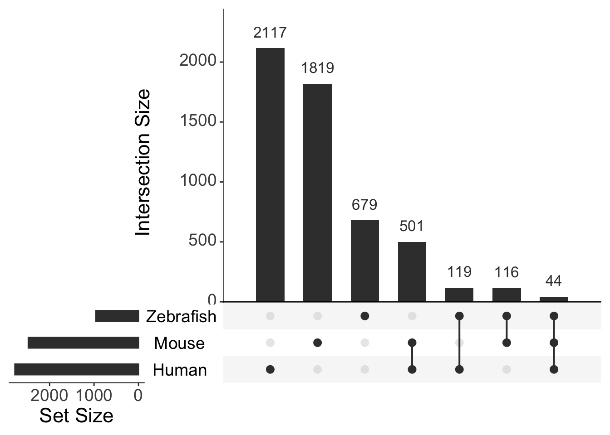
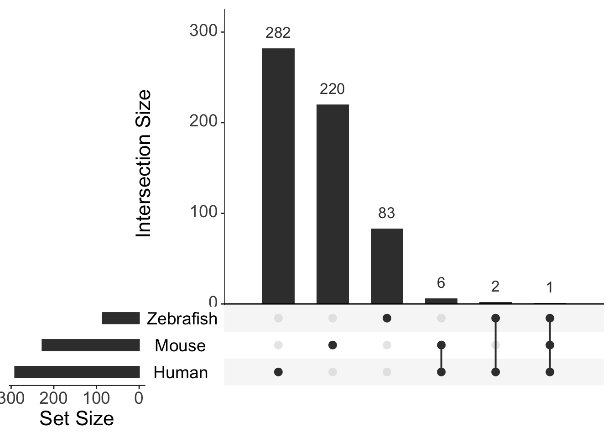
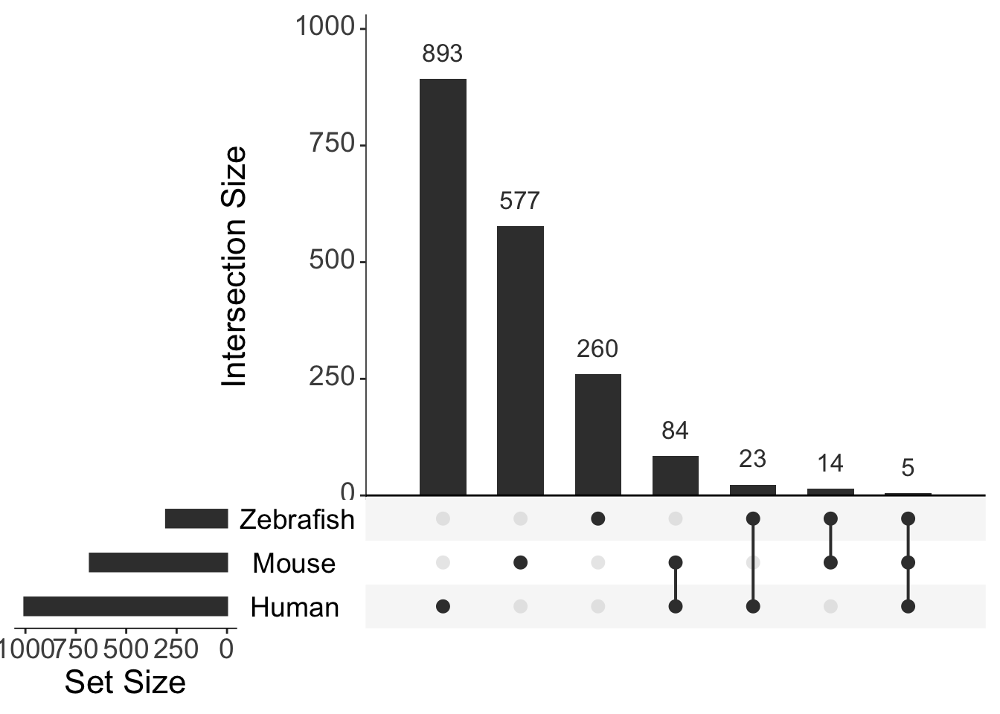
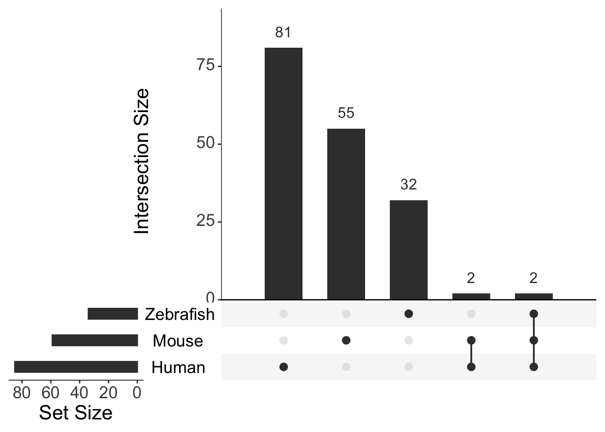

Last updated: 2020-04-29
Checks: 7 0
Knit directory: ire/
This reproducible R Markdown analysis was created with workflowr (version 1.6.1). The Checks tab describes the reproducibility checks that were applied when the results were created. The Past versions tab lists the development history.
Great! Since the R Markdown file has been committed to the Git repository, you know the exact version of the code that produced these results.
Great job! The global environment was empty. Objects defined in the global environment can affect the analysis in your R Markdown file in unknown ways. For reproduciblity it’s best to always run the code in an empty environment.
The command set.seed(20200420) was run prior to running the code in the R Markdown file. Setting a seed ensures that any results that rely on randomness, e.g. subsampling or permutations, are reproducible.
Great job! Recording the operating system, R version, and package versions is critical for reproducibility.
Nice! There were no cached chunks for this analysis, so you can be confident that you successfully produced the results during this run.
Great job! Using relative paths to the files within your workflowr project makes it easier to run your code on other machines.
Great! You are using Git for version control. Tracking code development and connecting the code version to the results is critical for reproducibility.
The results in this page were generated with repository version 0f8be9f. See the Past versions tab to see a history of the changes made to the R Markdown and HTML files.
Note that you need to be careful to ensure that all relevant files for the analysis have been committed to Git prior to generating the results (you can use wflow_publish or wflow_git_commit). workflowr only checks the R Markdown file, but you know if there are other scripts or data files that it depends on. Below is the status of the Git repository when the results were generated:
Ignored files:
Ignored: .DS_Store
Ignored: .RData
Ignored: .Rhistory
Ignored: .Trash/
Ignored: .continuum/
Ignored: .gnupg_pre_2.1/
Ignored: .matplotlib/
Ignored: .t_coffee/
Ignored: Documents/.DS_Store
Ignored: Documents/GitHub/.DS_Store
Ignored: Documents/GitHub/praiseme/praiseme/.Rhistory
Ignored: Documents/GitHub/praiseme/praiseme/.Rproj.user/
Ignored: Documents/NewNotes/notes/
Ignored: Documents/Pictures/
Ignored: Documents/Processing/.DS_Store
Ignored: Documents/Processing/examples/
Ignored: Documents/Processing/libraries/
Ignored: Documents/Processing/spirograph/.DS_Store
Ignored: Documents/Processing/templates/
Ignored: Documents/Processing/tools/
Ignored: Documents/R/
Ignored: Documents/Review-Article.scriv/Settings/User/
Ignored: Documents/ReviewArticlePlanning.scriv/Settings/User/
Ignored: Documents/Tutorial.scriv/Settings/User/
Ignored: Documents/Untitled.scriv/Settings/User/
Ignored: Documents/test.scriv/Settings/User/
Ignored: backup/
Ignored: dircreate/
Untracked files:
Untracked: .AnnotationHub/
Untracked: .CFUserTextEncoding
Untracked: .CHRONOS/
Untracked: .ENA.sh.swp
Untracked: .MacOSX/
Untracked: .RDataTmp
Untracked: .Rapp.history
Untracked: .Xauthority
Untracked: .adobe/
Untracked: .bash_history
Untracked: .bash_profile
Untracked: .bash_profile-anaconda.bak
Untracked: .bash_profile-miniconda3.bak
Untracked: .bash_sessions/
Untracked: .bashrc
Untracked: .bitmonero/
Untracked: .cache/
Untracked: .conda/
Untracked: .condarc
Untracked: .config/
Untracked: .cpanm/
Untracked: .cups/
Untracked: .dlv/
Untracked: .docker/
Untracked: .electrum/
Untracked: .gitconfig
Untracked: .gitflow_export
Untracked: .gitignore
Untracked: .gitignore_global
Untracked: .gnupg/
Untracked: .hgignore_global
Untracked: .keras/
Untracked: .node-gyp/
Untracked: .npm/
Untracked: .nx/
Untracked: .oh-my-zsh/
Untracked: .oracle_jre_usage/
Untracked: .qt/
Untracked: .rnd
Untracked: .rstudio-desktop/
Untracked: .s1.sh
Untracked: .savant/
Untracked: .serverauth.1208
Untracked: .serverauth.16273
Untracked: .serverauth.1656
Untracked: .serverauth.18995
Untracked: .serverauth.20301
Untracked: .serverauth.3234
Untracked: .serverauth.35255
Untracked: .serverauth.38277
Untracked: .serverauth.40350
Untracked: .serverauth.4262
Untracked: .serverauth.4315
Untracked: .serverauth.4358
Untracked: .serverauth.57832
Untracked: .serverauth.63886
Untracked: .serverauth.64197
Untracked: .serverauth.7330
Untracked: .serverauth.79286
Untracked: .serverauth.81376
Untracked: .serverauth.920
Untracked: .ssh/
Untracked: .stCommitMsg
Untracked: .subversion/
Untracked: .sudo_as_admin_successful
Untracked: .vim/
Untracked: .viminfo
Untracked: .vscode/
Untracked: .yjp/
Untracked: .zcompdump-ELIZA-5.2
Untracked: .zcompdump-ELIZA-5.3
Untracked: .zsh-update
Untracked: .zsh_history
Untracked: .zshrc
Untracked: 0.361366553072916.tmp
Untracked: 0.547629240007279.tmp
Untracked: 0.561695152931986.tmp
Untracked: 0.738235249024914.tmp
Untracked: 496128434
Untracked: Applications/
Untracked: BSgenome.Drerio.UCSC.danRer11/
Untracked: Boostnote/
Untracked: Box Sync/
Untracked: Box/
Untracked: CytoscapeConfiguration/
Untracked: Desktop/
Untracked: Documents/.localized
Untracked: Documents/GitHub/ire/
Untracked: Documents/GitHub/notes/
Untracked: Documents/GitHub/praiseme/praiseme/R/praiseme.R
Untracked: Documents/GitHub/praiseme/praiseme/man/praiseme.Rd
Untracked: Downloads/
Untracked: Drosophila_melanogaster.BDGP6.ncrna.fa
Untracked: FKBP5-24mths.png
Untracked: FKBP5-6mths.png
Untracked: FKBP5-Oldfish-Mutants.png
Untracked: FKBP5-Oldfish_Wt.png
Untracked: Google Drive/
Untracked: Library/
Untracked: Monero/
Untracked: Movies/
Untracked: Music/
Untracked: PSEN1-Oldfish-Mutants.png
Untracked: PSEN1-Oldfish-Wt.png
Untracked: Pictures/
Untracked: Public/
Untracked: R-3.4.1.pkg
Untracked: Research/
Untracked: RightFont/
Untracked: Sashimi-24mth.png
Untracked: Sashimi-6mth.png
Untracked: Sashimi.png
Untracked: Sashimi2.png
Untracked: Sashimi3.png
Untracked: TableS13-ZScores.xlsx
Untracked: Untitled.csv
Untracked: Untitled.pdf
Untracked: Zebrafish_RNAseq_DE/
Untracked: _book/
Untracked: _bookdown.yml
Untracked: _bookdown_files/
Untracked: anaconda/
Untracked: bib/
Untracked: bin/
Untracked: body.Rmd
Untracked: bookdownplus.Rproj
Untracked: cpp/
Untracked: downloadUrl.gff
Untracked: example/
Untracked: gekko/
Untracked: gitRepos/
Untracked: go/
Untracked: graph.pdf
Untracked: gridsearch.zip
Untracked: gridsearch/
Untracked: homer/
Untracked: hub
Untracked: igv/
Untracked: images/
Untracked: index.Rmd
Untracked: miniconda3/
Untracked: ngsReports_Fastqc.html
Untracked: nhi.dbj
Untracked: nhi/
Untracked: nhisci/
Untracked: old_Box/
Untracked: old_Box_2/
Untracked: pathwayDGE.rds
Untracked: permutedStats-actualModules.RData
Untracked: pkg/
Untracked: programs/
Untracked: ran.csv
Untracked: rmd/
Untracked: runPipeline.sh
Untracked: sav.R
Untracked: script2.sh
Untracked: settings.env
Untracked: src/
Untracked: steve.R
Untracked: style/
Untracked: testData/
Untracked: tex/
Untracked: untitled.R
Untracked: zebrafish.png
Untracked: zshrc
Unstaged changes:
Modified: Documents/GitHub/Zebrafish_RNAseq_DE
Modified: Documents/GitHub/forgetfulfish
Modified: Documents/GitHub/k97fsZebrafishAnalysis
Modified: Documents/GitHub/praiseme/praiseme/DESCRIPTION
Modified: Documents/GitHub/praiseme/praiseme/NAMESPACE
Deleted: Documents/GitHub/praiseme/praiseme/R/hello.R
Deleted: Documents/GitHub/praiseme/praiseme/man/hello.Rd
Modified: Documents/GitHub/praiseme/praiseme/praiseme.Rproj
Modified: Documents/GitHub/q96k97
Deleted: README.md
Deleted: transcriptQuantification.Rmd
Staged changes:
New: Documents/.NH-ConferencePoster.pdf.icloud
New: Documents/2017-09-29.txt
New: Documents/COMBINE_Poster.gif
New: Documents/Discussion.md
New: Documents/EndNote/Styles/Harvard_UofA__Style_Manual_Australia_6th_edn__Surname_only_Jan14 Copy Copy.ens
New: Documents/GitHub/2019_Lardelli_AllWT_6month_RNASeq
New: Documents/GitHub/Zebrafish_RNAseq_DE
New: Documents/GitHub/forgetfulfish
New: Documents/GitHub/futura/FuturaPTBold.otf
New: Documents/GitHub/futura/FuturaPTBoldOblique.otf
New: Documents/GitHub/futura/FuturaPTBook.otf
New: Documents/GitHub/futura/FuturaPTBookOblique.otf
New: Documents/GitHub/futura/FuturaPTCondBold.otf
New: Documents/GitHub/futura/FuturaPTCondBoldOblique.otf
New: Documents/GitHub/futura/FuturaPTCondBook.otf
New: Documents/GitHub/futura/FuturaPTCondBookOblique.otf
New: Documents/GitHub/futura/FuturaPTCondExtraBold.otf
New: Documents/GitHub/futura/FuturaPTCondExtraBoldOblique.otf
New: Documents/GitHub/futura/FuturaPTCondMedium.otf
New: Documents/GitHub/futura/FuturaPTCondMediumOblique.otf
New: Documents/GitHub/futura/FuturaPTDemi.otf
New: Documents/GitHub/futura/FuturaPTDemiOblique.otf
New: Documents/GitHub/futura/FuturaPTExtraBold.otf
New: Documents/GitHub/futura/FuturaPTExtraBoldOblique.otf
New: Documents/GitHub/futura/FuturaPTHeavy.otf
New: Documents/GitHub/futura/FuturaPTHeavyOblique.otf
New: Documents/GitHub/futura/FuturaPTLight.otf
New: Documents/GitHub/futura/FuturaPTLightOblique.otf
New: Documents/GitHub/futura/FuturaPTMedium.otf
New: Documents/GitHub/futura/FuturaPTMediumOblique.otf
New: Documents/GitHub/k97fsZebrafishAnalysis
New: Documents/GitHub/praiseme/praiseme/.Rbuildignore
New: Documents/GitHub/praiseme/praiseme/DESCRIPTION
New: Documents/GitHub/praiseme/praiseme/NAMESPACE
New: Documents/GitHub/praiseme/praiseme/R/hello.R
New: Documents/GitHub/praiseme/praiseme/man/hello.Rd
New: Documents/GitHub/praiseme/praiseme/praiseme.Rproj
New: Documents/GitHub/q96k97
New: Documents/K97 L-plastin immuno figure V2/Slide1.tiff
New: Documents/K97 L-plastin immuno figure V2/Slide2.tiff
New: Documents/K97 L-plastin immuno figure V2/Slide3.tiff
New: Documents/Library/Groups-ulgroup/33c2cbaf58a24f08b01854f32bb164d2-ulgroup/319a43e708bc40209eb9cd2be2db9d5a-ulgroup/09719fe9a8ba4760996aa02aeaeece8a.ulysses/Content.xml
New: Documents/Library/Groups-ulgroup/33c2cbaf58a24f08b01854f32bb164d2-ulgroup/319a43e708bc40209eb9cd2be2db9d5a-ulgroup/09719fe9a8ba4760996aa02aeaeece8a.ulysses/Text.txt
New: Documents/Library/Groups-ulgroup/33c2cbaf58a24f08b01854f32bb164d2-ulgroup/319a43e708bc40209eb9cd2be2db9d5a-ulgroup/8857a9885273430a8be471fb4a977c0f.ulysses/Content.xml
New: Documents/Library/Groups-ulgroup/33c2cbaf58a24f08b01854f32bb164d2-ulgroup/319a43e708bc40209eb9cd2be2db9d5a-ulgroup/8857a9885273430a8be471fb4a977c0f.ulysses/Text.txt
New: Documents/Library/Groups-ulgroup/33c2cbaf58a24f08b01854f32bb164d2-ulgroup/319a43e708bc40209eb9cd2be2db9d5a-ulgroup/Info.ulgroup
New: Documents/Library/Groups-ulgroup/33c2cbaf58a24f08b01854f32bb164d2-ulgroup/319a43e708bc40209eb9cd2be2db9d5a-ulgroup/de8d51154b59494d8b0a4ab28abbac51.ulysses/Content.xml
New: Documents/Library/Groups-ulgroup/33c2cbaf58a24f08b01854f32bb164d2-ulgroup/319a43e708bc40209eb9cd2be2db9d5a-ulgroup/de8d51154b59494d8b0a4ab28abbac51.ulysses/Text.txt
New: Documents/Library/Groups-ulgroup/33c2cbaf58a24f08b01854f32bb164d2-ulgroup/319a43e708bc40209eb9cd2be2db9d5a-ulgroup/efa8615f86f64b8283492b269a4fc746.ulysses/Content.xml
New: Documents/Library/Groups-ulgroup/33c2cbaf58a24f08b01854f32bb164d2-ulgroup/319a43e708bc40209eb9cd2be2db9d5a-ulgroup/efa8615f86f64b8283492b269a4fc746.ulysses/Text.txt
New: Documents/Library/Groups-ulgroup/33c2cbaf58a24f08b01854f32bb164d2-ulgroup/7e4edaf29ca04951ae21507848cca99a-ulgroup/5e09bb30aa7042449b630dae2faab727.ulysses/Content.xml
New: Documents/Library/Groups-ulgroup/33c2cbaf58a24f08b01854f32bb164d2-ulgroup/7e4edaf29ca04951ae21507848cca99a-ulgroup/5e09bb30aa7042449b630dae2faab727.ulysses/Text.txt
New: Documents/Library/Groups-ulgroup/33c2cbaf58a24f08b01854f32bb164d2-ulgroup/7e4edaf29ca04951ae21507848cca99a-ulgroup/6270e917773b4409b44ffc30a0c0d4f9.ulysses/Content.xml
New: Documents/Library/Groups-ulgroup/33c2cbaf58a24f08b01854f32bb164d2-ulgroup/7e4edaf29ca04951ae21507848cca99a-ulgroup/6270e917773b4409b44ffc30a0c0d4f9.ulysses/Text.txt
New: Documents/Library/Groups-ulgroup/33c2cbaf58a24f08b01854f32bb164d2-ulgroup/7e4edaf29ca04951ae21507848cca99a-ulgroup/Info.ulgroup
New: Documents/Library/Groups-ulgroup/33c2cbaf58a24f08b01854f32bb164d2-ulgroup/7e4edaf29ca04951ae21507848cca99a-ulgroup/f05b99ea57a4428e855e008465057e3f.ulysses/Content.xml
New: Documents/Library/Groups-ulgroup/33c2cbaf58a24f08b01854f32bb164d2-ulgroup/7e4edaf29ca04951ae21507848cca99a-ulgroup/f05b99ea57a4428e855e008465057e3f.ulysses/Text.txt
New: Documents/Library/Groups-ulgroup/33c2cbaf58a24f08b01854f32bb164d2-ulgroup/Info.ulgroup
New: Documents/Library/Groups-ulgroup/33c2cbaf58a24f08b01854f32bb164d2-ulgroup/fda38c03c74744e7b00f2237daaaf4a6-ulgroup/5c21d9eb2cd443c4a1aafabc325c13b5.ulysses/Content.xml
New: Documents/Library/Groups-ulgroup/33c2cbaf58a24f08b01854f32bb164d2-ulgroup/fda38c03c74744e7b00f2237daaaf4a6-ulgroup/5c21d9eb2cd443c4a1aafabc325c13b5.ulysses/Media/0.iCloud On My Mac.4fd7a37dc72544aa8ad6ad2579652a02.jpg
New: Documents/Library/Groups-ulgroup/33c2cbaf58a24f08b01854f32bb164d2-ulgroup/fda38c03c74744e7b00f2237daaaf4a6-ulgroup/5c21d9eb2cd443c4a1aafabc325c13b5.ulysses/Text.txt
New: Documents/Library/Groups-ulgroup/33c2cbaf58a24f08b01854f32bb164d2-ulgroup/fda38c03c74744e7b00f2237daaaf4a6-ulgroup/5e53401c53af4596acb2e038c79e3eab.ulysses/Content.xml
New: Documents/Library/Groups-ulgroup/33c2cbaf58a24f08b01854f32bb164d2-ulgroup/fda38c03c74744e7b00f2237daaaf4a6-ulgroup/5e53401c53af4596acb2e038c79e3eab.ulysses/Text.txt
New: Documents/Library/Groups-ulgroup/33c2cbaf58a24f08b01854f32bb164d2-ulgroup/fda38c03c74744e7b00f2237daaaf4a6-ulgroup/Info.ulgroup
New: Documents/Library/Groups-ulgroup/33c2cbaf58a24f08b01854f32bb164d2-ulgroup/fda38c03c74744e7b00f2237daaaf4a6-ulgroup/b292d4b17521411d9626b0cb1797fe85.ulysses/Content.xml
New: Documents/Library/Groups-ulgroup/33c2cbaf58a24f08b01854f32bb164d2-ulgroup/fda38c03c74744e7b00f2237daaaf4a6-ulgroup/b292d4b17521411d9626b0cb1797fe85.ulysses/Text.txt
New: Documents/Library/Groups-ulgroup/Info.ulgroup
New: Documents/Library/Info.ulgroup
New: Documents/Library/Root.plist
New: Documents/Library/Trash-ultrash/Info.ultrash
New: Documents/Library/Unfiled-ulgroup/532af22959ba4fc092f08ee0499b060a.ulysses/Content.xml
New: Documents/Library/Unfiled-ulgroup/532af22959ba4fc092f08ee0499b060a.ulysses/Text.txt
New: Documents/Library/Unfiled-ulgroup/Info.ulgroup
New: Documents/Library/Unfiled-ulgroup/b2d4e1a5449e4aab8431ed1aaaf8e6e3.ulysses/Content.xml
New: Documents/Library/Unfiled-ulgroup/b2d4e1a5449e4aab8431ed1aaaf8e6e3.ulysses/Text.txt
New: Documents/Minimal Wardrobe.md
New: Documents/My EndNote Library - NG.txt
New: Documents/My EndNote Library 3.rtf
New: Documents/My EndNote Library-Dupl.Data/rdb/csort.MYD
New: Documents/My EndNote Library-Dupl.Data/rdb/csort.MYI
New: Documents/My EndNote Library-Dupl.Data/rdb/csort.frm
New: Documents/My EndNote Library-Dupl.Data/rdb/db.opt
New: Documents/My EndNote Library-Dupl.Data/rdb/jterms.MYD
New: Documents/My EndNote Library-Dupl.Data/rdb/jterms.MYI
New: Documents/My EndNote Library-Dupl.Data/rdb/jterms.frm
New: Documents/My EndNote Library-Dupl.Data/rdb/misc.MYD
New: Documents/My EndNote Library-Dupl.Data/rdb/misc.MYI
New: Documents/My EndNote Library-Dupl.Data/rdb/misc.frm
New: Documents/My EndNote Library-Dupl.Data/rdb/pdf_index.MYD
New: Documents/My EndNote Library-Dupl.Data/rdb/pdf_index.MYI
New: Documents/My EndNote Library-Dupl.Data/rdb/pdf_index.frm
New: Documents/My EndNote Library-Dupl.Data/rdb/refs.MYD
New: Documents/My EndNote Library-Dupl.Data/rdb/refs.MYI
New: Documents/My EndNote Library-Dupl.Data/rdb/refs.frm
New: Documents/My EndNote Library-Dupl.Data/rdb/refs_ext.MYD
New: Documents/My EndNote Library-Dupl.Data/rdb/refs_ext.MYI
New: Documents/My EndNote Library-Dupl.Data/rdb/refs_ext.frm
New: Documents/My EndNote Library-Dupl.Data/rdb/terms.MYD
New: Documents/My EndNote Library-Dupl.Data/rdb/terms.MYI
New: Documents/My EndNote Library-Dupl.Data/rdb/terms.frm
New: Documents/My EndNote Library-Dupl.Data/tdb/csort.MYD
New: Documents/My EndNote Library-Dupl.Data/tdb/csort.MYI
New: Documents/My EndNote Library-Dupl.Data/tdb/csort.frm
New: Documents/My EndNote Library-Dupl.Data/tdb/db.opt
New: Documents/My EndNote Library-Dupl.Data/tdb/jterms.MYD
New: Documents/My EndNote Library-Dupl.Data/tdb/jterms.MYI
New: Documents/My EndNote Library-Dupl.Data/tdb/jterms.frm
New: Documents/My EndNote Library-Dupl.Data/tdb/misc.MYD
New: Documents/My EndNote Library-Dupl.Data/tdb/misc.MYI
New: Documents/My EndNote Library-Dupl.Data/tdb/misc.frm
New: Documents/My EndNote Library-Dupl.Data/tdb/pdf_index.MYD
New: Documents/My EndNote Library-Dupl.Data/tdb/pdf_index.MYI
New: Documents/My EndNote Library-Dupl.Data/tdb/pdf_index.frm
New: Documents/My EndNote Library-Dupl.Data/tdb/refs.MYD
New: Documents/My EndNote Library-Dupl.Data/tdb/refs.MYI
New: Documents/My EndNote Library-Dupl.Data/tdb/refs.frm
New: Documents/My EndNote Library-Dupl.Data/tdb/refs_ext.MYD
New: Documents/My EndNote Library-Dupl.Data/tdb/refs_ext.MYI
New: Documents/My EndNote Library-Dupl.Data/tdb/refs_ext.frm
New: Documents/My EndNote Library-Dupl.Data/tdb/terms.MYD
New: Documents/My EndNote Library-Dupl.Data/tdb/terms.MYI
New: Documents/My EndNote Library-Dupl.Data/tdb/terms.frm
New: Documents/My EndNote Library-Dupl.enl
New: Documents/My EndNote Library-Dupl.txt
New: Documents/My EndNote Library.Data/rdb/csort.MYD
New: Documents/My EndNote Library.Data/rdb/csort.MYI
New: Documents/My EndNote Library.Data/rdb/csort.frm
New: Documents/My EndNote Library.Data/rdb/db.opt
New: Documents/My EndNote Library.Data/rdb/jterms.MYD
New: Documents/My EndNote Library.Data/rdb/jterms.MYI
New: Documents/My EndNote Library.Data/rdb/jterms.frm
New: Documents/My EndNote Library.Data/rdb/misc.MYD
New: Documents/My EndNote Library.Data/rdb/misc.MYI
New: Documents/My EndNote Library.Data/rdb/misc.frm
New: Documents/My EndNote Library.Data/rdb/pdf_index.MYD
New: Documents/My EndNote Library.Data/rdb/pdf_index.MYI
New: Documents/My EndNote Library.Data/rdb/pdf_index.frm
New: Documents/My EndNote Library.Data/rdb/refs.MYD
New: Documents/My EndNote Library.Data/rdb/refs.MYI
New: Documents/My EndNote Library.Data/rdb/refs.frm
New: Documents/My EndNote Library.Data/rdb/refs_ext.MYD
New: Documents/My EndNote Library.Data/rdb/refs_ext.MYI
New: Documents/My EndNote Library.Data/rdb/refs_ext.frm
New: Documents/My EndNote Library.Data/rdb/terms.MYD
New: Documents/My EndNote Library.Data/rdb/terms.MYI
New: Documents/My EndNote Library.Data/rdb/terms.frm
New: Documents/My EndNote Library.Data/tdb/csort.MYD
New: Documents/My EndNote Library.Data/tdb/csort.MYI
New: Documents/My EndNote Library.Data/tdb/csort.frm
New: Documents/My EndNote Library.Data/tdb/db.opt
New: Documents/My EndNote Library.Data/tdb/jterms.MYD
New: Documents/My EndNote Library.Data/tdb/jterms.MYI
New: Documents/My EndNote Library.Data/tdb/jterms.frm
New: Documents/My EndNote Library.Data/tdb/misc.MYD
New: Documents/My EndNote Library.Data/tdb/misc.MYI
New: Documents/My EndNote Library.Data/tdb/misc.frm
New: Documents/My EndNote Library.Data/tdb/pdf_index.MYD
New: Documents/My EndNote Library.Data/tdb/pdf_index.MYI
New: Documents/My EndNote Library.Data/tdb/pdf_index.frm
New: Documents/My EndNote Library.Data/tdb/refs.MYD
New: Documents/My EndNote Library.Data/tdb/refs.MYI
New: Documents/My EndNote Library.Data/tdb/refs.frm
New: Documents/My EndNote Library.Data/tdb/refs_ext.MYD
New: Documents/My EndNote Library.Data/tdb/refs_ext.MYI
New: Documents/My EndNote Library.Data/tdb/refs_ext.frm
New: Documents/My EndNote Library.Data/tdb/terms.MYD
New: Documents/My EndNote Library.Data/tdb/terms.MYI
New: Documents/My EndNote Library.Data/tdb/terms.frm
New: Documents/My EndNote Library.enl
New: Documents/My EndNote Library.htm
New: Documents/NG.rtf
New: Documents/NewNotes/boostnote.json
New: Documents/Pages from sankeyDiagram.pdf
New: Documents/Processing/books/books.pde
New: Documents/Processing/books/hi.pde
New: Documents/Processing/books2/books2.pde
New: Documents/Processing/learning/learning.pde
New: Documents/Processing/modes/PythonMode/LICENSE.txt
New: Documents/Processing/modes/PythonMode/application/macosx/Info.plist.tmpl
New: Documents/Processing/modes/PythonMode/application/macosx/dialogs.applescript
New: Documents/Processing/modes/PythonMode/application/macosx/findjava
New: Documents/Processing/modes/PythonMode/application/macosx/sketch.icns
New: Documents/Processing/modes/PythonMode/application/windows/sketch.ico
New: Documents/Processing/modes/PythonMode/examples/Advanced/KeyCodes/KeyCodes.pyde
New: Documents/Processing/modes/PythonMode/examples/Advanced/KeyCodes/sketch.properties
New: Documents/Processing/modes/PythonMode/examples/Basics/Camera/MoveEye/MoveEye.pyde
New: Documents/Processing/modes/PythonMode/examples/Basics/Camera/Orthographic/Orthographic.pyde
New: Documents/Processing/modes/PythonMode/examples/Basics/Camera/Perspective/Perspective.pyde
New: Documents/Processing/modes/PythonMode/examples/Basics/Color/Brightness/Brightness.pyde
New: Documents/Processing/modes/PythonMode/examples/Basics/Color/ColorVariables/ColorVariables.pyde
New: Documents/Processing/modes/PythonMode/examples/Basics/Color/Hue/Hue.pyde
New: Documents/Processing/modes/PythonMode/examples/Basics/Color/LinearGradient/LinearGradient.pyde
New: Documents/Processing/modes/PythonMode/examples/Basics/Color/RadialGradient/RadialGradient.pyde
New: Documents/Processing/modes/PythonMode/examples/Basics/Color/Relativity/Relativity.pyde
New: Documents/Processing/modes/PythonMode/examples/Basics/Color/Saturation/Saturation.pyde
New: Documents/Processing/modes/PythonMode/examples/Basics/Color/WaveGradient/WaveGradient.pyde
New: Documents/Processing/modes/PythonMode/examples/Basics/Control/BooleanOperators/BooleanOperators.pyde
New: Documents/Processing/modes/PythonMode/examples/Basics/Control/Conditionals1/Conditionals1.pyde
New: Documents/Processing/modes/PythonMode/examples/Basics/Control/Conditionals2/Conditionals2.pyde
New: Documents/Processing/modes/PythonMode/examples/Basics/Control/EmbeddedIteration/EmbeddedIteration.pyde
New: Documents/Processing/modes/PythonMode/examples/Basics/Control/Iteration/Iteration.pyde
New: Documents/Processing/modes/PythonMode/examples/Basics/Data/DatatypeConversion/DatatypeConversion.pyde
New: Documents/Processing/modes/PythonMode/examples/Basics/Data/DatatypeConversion/data/Georgia.ttf
New: Documents/Processing/modes/PythonMode/examples/Basics/Data/IntegersFloats/IntegersFloats.pyde
New: Documents/Processing/modes/PythonMode/examples/Basics/Data/Strings/Strings.pyde
New: Documents/Processing/modes/PythonMode/examples/Basics/Data/Strings/data/Georgia.ttf
New: Documents/Processing/modes/PythonMode/examples/Basics/Data/TrueFalse/TrueFalse.pyde
New: Documents/Processing/modes/PythonMode/examples/Basics/Data/VariableScope/VariableScope.pyde
New: Documents/Processing/modes/PythonMode/examples/Basics/Data/Variables/Variables.pyde
New: Documents/Processing/modes/PythonMode/examples/Basics/Form/Bezier/Bezier.pyde
New: Documents/Processing/modes/PythonMode/examples/Basics/Form/PieChart/PieChart.pyde
New: Documents/Processing/modes/PythonMode/examples/Basics/Form/PointsLines/PointsLines.pyde
New: Documents/Processing/modes/PythonMode/examples/Basics/Form/Primitives3D/Primitives3D.pyde
New: Documents/Processing/modes/PythonMode/examples/Basics/Form/RegularPolygon/RegularPolygon.pyde
New: Documents/Processing/modes/PythonMode/examples/Basics/Form/ShapePrimitives/ShapePrimitives.pyde
New: Documents/Processing/modes/PythonMode/examples/Basics/Form/Star/Star.pyde
New: Documents/Processing/modes/PythonMode/examples/Basics/Form/TriangleStrip/TriangleStrip.pyde
New: Documents/Processing/modes/PythonMode/examples/Basics/Image/Alphamask/Alphamask.pyde
New: Documents/Processing/modes/PythonMode/examples/Basics/Image/Alphamask/data/mask.jpg
New: Documents/Processing/modes/PythonMode/examples/Basics/Image/Alphamask/data/moonwalk.jpg
New: Documents/Processing/modes/PythonMode/examples/Basics/Image/BackgroundImage/BackgroundImage.pyde
New: Documents/Processing/modes/PythonMode/examples/Basics/Image/BackgroundImage/data/moonwalk.jpg
New: Documents/Processing/modes/PythonMode/examples/Basics/Image/CreateImage/CreateImage.pyde
New: Documents/Processing/modes/PythonMode/examples/Basics/Image/LoadDisplayImage/LoadDisplayImage.pyde
New: Documents/Processing/modes/PythonMode/examples/Basics/Image/LoadDisplayImage/data/moonwalk.jpg
New: Documents/Processing/modes/PythonMode/examples/Basics/Image/Pointillism/Pointillism.pyde
New: Documents/Processing/modes/PythonMode/examples/Basics/Image/Pointillism/data/moonwalk.jpg
New: Documents/Processing/modes/PythonMode/examples/Basics/Image/RequestImage/RequestImage.pyde
New: Documents/Processing/modes/PythonMode/examples/Basics/Image/RequestImage/data/PT_anim0000.gif
New: Documents/Processing/modes/PythonMode/examples/Basics/Image/RequestImage/data/PT_anim0001.gif
New: Documents/Processing/modes/PythonMode/examples/Basics/Image/RequestImage/data/PT_anim0002.gif
New: Documents/Processing/modes/PythonMode/examples/Basics/Image/RequestImage/data/PT_anim0003.gif
New: Documents/Processing/modes/PythonMode/examples/Basics/Image/RequestImage/data/PT_anim0004.gif
New: Documents/Processing/modes/PythonMode/examples/Basics/Image/RequestImage/data/PT_anim0005.gif
New: Documents/Processing/modes/PythonMode/examples/Basics/Image/RequestImage/data/PT_anim0006.gif
New: Documents/Processing/modes/PythonMode/examples/Basics/Image/RequestImage/data/PT_anim0007.gif
New: Documents/Processing/modes/PythonMode/examples/Basics/Image/RequestImage/data/PT_anim0008.gif
New: Documents/Processing/modes/PythonMode/examples/Basics/Image/RequestImage/data/PT_anim0009.gif
New: Documents/Processing/modes/PythonMode/examples/Basics/Image/RequestImage/data/PT_anim0010.gif
New: Documents/Processing/modes/PythonMode/examples/Basics/Image/RequestImage/data/PT_anim0011.gif
New: Documents/Processing/modes/PythonMode/examples/Basics/Image/Transparency/Transparency.pyde
New: Documents/Processing/modes/PythonMode/examples/Basics/Image/Transparency/data/moonwalk.jpg
New: Documents/Processing/modes/PythonMode/examples/Basics/Input/Clock/Clock.pyde
New: Documents/Processing/modes/PythonMode/examples/Basics/Input/Constrain/Constrain.pyde
New: Documents/Processing/modes/PythonMode/examples/Basics/Input/Easing/Easing.pyde
New: Documents/Processing/modes/PythonMode/examples/Basics/Input/Keyboard/Keyboard.pyde
New: Documents/Processing/modes/PythonMode/examples/Basics/Input/KeyboardFunctions/KeyboardFunctions.pyde
New: Documents/Processing/modes/PythonMode/examples/Basics/Input/Milliseconds/Milliseconds.pyde
New: Documents/Processing/modes/PythonMode/examples/Basics/Input/Mouse1D/Mouse1D.pyde
New: Documents/Processing/modes/PythonMode/examples/Basics/Input/Mouse2D/Mouse2D.pyde
New: Documents/Processing/modes/PythonMode/examples/Basics/Input/MouseFunctions/MouseFunctions.pyde
New: Documents/Processing/modes/PythonMode/examples/Basics/Input/MousePress/MousePress.pyde
New: Documents/Processing/modes/PythonMode/examples/Basics/Input/MouseSignals/MouseSignals.pyde
New: Documents/Processing/modes/PythonMode/examples/Basics/Input/StoringInput/StoringInput.pyde
New: Documents/Processing/modes/PythonMode/examples/Basics/Lights/Directional/Directional.pyde
New: Documents/Processing/modes/PythonMode/examples/Basics/Lights/Mixture/Mixture.pyde
New: Documents/Processing/modes/PythonMode/examples/Basics/Lights/MixtureGrid/MixtureGrid.pyde
New: Documents/Processing/modes/PythonMode/examples/Basics/Lights/OnOff/OnOff.pyde
New: Documents/Processing/modes/PythonMode/examples/Basics/Lights/Reflection/Reflection.pyde
New: Documents/Processing/modes/PythonMode/examples/Basics/Lights/Spot/Spot.pyde
New: Documents/Processing/modes/PythonMode/examples/Basics/Lists/List/List.pyde
New: Documents/Processing/modes/PythonMode/examples/Basics/Lists/List2D/List2D.pyde
New: Documents/Processing/modes/PythonMode/examples/Basics/Lists/ListObjects/ListObjects.pyde
New: Documents/Processing/modes/PythonMode/examples/Basics/Lists/ListObjects/module.py
New: Documents/Processing/modes/PythonMode/examples/Basics/Math/AdditiveWave/AdditiveWave.pyde
New: Documents/Processing/modes/PythonMode/examples/Basics/Math/Arctangent/Arctangent.pyde
New: Documents/Processing/modes/PythonMode/examples/Basics/Math/Arctangent/eye.py
New: Documents/Processing/modes/PythonMode/examples/Basics/Math/Distance1D/Distance1D.pyde
New: Documents/Processing/modes/PythonMode/examples/Basics/Math/Distance2D/Distance2D.pyde
New: Documents/Processing/modes/PythonMode/examples/Basics/Math/DoubleRandom/DoubleRandom.pyde
New: Documents/Processing/modes/PythonMode/examples/Basics/Math/Graphing2DEquation/Graphing2DEquation.pyde
New: Documents/Processing/modes/PythonMode/examples/Basics/Math/IncrementDecrement/IncrementDecrement.pyde
New: Documents/Processing/modes/PythonMode/examples/Basics/Math/Interpolate/Interpolate.pyde
New: Documents/Processing/modes/PythonMode/examples/Basics/Math/Map/Map.pyde
New: Documents/Processing/modes/PythonMode/examples/Basics/Math/Noise1D/Noise1D.pyde
New: Documents/Processing/modes/PythonMode/examples/Basics/Math/Noise2D/Noise2D.pyde
New: Documents/Processing/modes/PythonMode/examples/Basics/Math/Noise3D/Noise3D.pyde
New: Documents/Processing/modes/PythonMode/examples/Basics/Math/NoiseWave/NoiseWave.pyde
New: Documents/Processing/modes/PythonMode/examples/Basics/Math/OperatorPrecedence/OperatorPrecedence.pyde
New: Documents/Processing/modes/PythonMode/examples/Basics/Math/PolarToCartesian/PolarToCartesian.pyde
New: Documents/Processing/modes/PythonMode/examples/Basics/Math/Random/Random.pyde
New: Documents/Processing/modes/PythonMode/examples/Basics/Math/RandomGaussian/RandomGaussian.pyde
New: Documents/Processing/modes/PythonMode/examples/Basics/Math/Sine/Sine.pyde
New: Documents/Processing/modes/PythonMode/examples/Basics/Math/SineCosine/SineCosine.pyde
New: Documents/Processing/modes/PythonMode/examples/Basics/Math/SineWave/SineWave.pyde
New: Documents/Processing/modes/PythonMode/examples/Basics/Objects/CompositeObjects/CompositeObjects.pyde
New: Documents/Processing/modes/PythonMode/examples/Basics/Objects/CompositeObjects/egg.py
New: Documents/Processing/modes/PythonMode/examples/Basics/Objects/CompositeObjects/egg_ring.py
New: Documents/Processing/modes/PythonMode/examples/Basics/Objects/CompositeObjects/ring.py
New: Documents/Processing/modes/PythonMode/examples/Basics/Objects/Inheritance/Inheritance.pyde
New: Documents/Processing/modes/PythonMode/examples/Basics/Objects/MultipleConstructors/MultipleConstructors.pyde
New: Documents/Processing/modes/PythonMode/examples/Basics/Objects/Objects/Objects.pyde
New: Documents/Processing/modes/PythonMode/examples/Basics/Shape/DisableStyle/DisableStyle.pyde
New: Documents/Processing/modes/PythonMode/examples/Basics/Shape/DisableStyle/data/bot1.svg
New: Documents/Processing/modes/PythonMode/examples/Basics/Shape/GetChild/GetChild.pyde
New: Documents/Processing/modes/PythonMode/examples/Basics/Shape/GetChild/data/usa-wikipedia.svg
New: Documents/Processing/modes/PythonMode/examples/Basics/Shape/LoadDisplayOBJ/LoadDisplayOBJ.pyde
New: Documents/Processing/modes/PythonMode/examples/Basics/Shape/LoadDisplayOBJ/data/rocket.mtl
New: Documents/Processing/modes/PythonMode/examples/Basics/Shape/LoadDisplayOBJ/data/rocket.obj
New: Documents/Processing/modes/PythonMode/examples/Basics/Shape/LoadDisplayOBJ/data/rocket.png
New: Documents/Processing/modes/PythonMode/examples/Basics/Shape/LoadDisplaySVG/LoadDisplaySVG.pyde
New: Documents/Processing/modes/PythonMode/examples/Basics/Shape/LoadDisplaySVG/data/bot1.svg
New: Documents/Processing/modes/PythonMode/examples/Basics/Shape/ScaleShape/ScaleShape.pyde
New: Documents/Processing/modes/PythonMode/examples/Basics/Shape/ScaleShape/data/bot1.svg
New: Documents/Processing/modes/PythonMode/examples/Basics/Structure/Coordinates/Coordinates.pyde
New: Documents/Processing/modes/PythonMode/examples/Basics/Structure/CreateGraphics/CreateGraphics.pyde
New: Documents/Processing/modes/PythonMode/examples/Basics/Structure/CreateGraphics/data/mask.jpg
New: Documents/Processing/modes/PythonMode/examples/Basics/Structure/CreateGraphics/data/test.jpg
New: Documents/Processing/modes/PythonMode/examples/Basics/Structure/Functions/Functions.pyde
New: Documents/Processing/modes/PythonMode/examples/Basics/Structure/Loop/Loop.pyde
New: Documents/Processing/modes/PythonMode/examples/Basics/Structure/NoLoop/NoLoop.pyde
New: Documents/Processing/modes/PythonMode/examples/Basics/Structure/Recursion/Recursion.pyde
New: Documents/Processing/modes/PythonMode/examples/Basics/Structure/Redraw/Redraw.pyde
New: Documents/Processing/modes/PythonMode/examples/Basics/Structure/SetupDraw/SetupDraw.pyde
New: Documents/Processing/modes/PythonMode/examples/Basics/Structure/StatementsComments/StatementsComments.pyde
New: Documents/Processing/modes/PythonMode/examples/Basics/Structure/WidthHeight/WidthHeight.pyde
New: Documents/Processing/modes/PythonMode/examples/Basics/Transform/Arm/Arm.pyde
New: Documents/Processing/modes/PythonMode/examples/Basics/Transform/Rotate/Rotate.pyde
New: Documents/Processing/modes/PythonMode/examples/Basics/Transform/RotatePushPop/RotatePushPop.pyde
New: Documents/Processing/modes/PythonMode/examples/Basics/Transform/RotateXY/RotateXY.pyde
New: Documents/Processing/modes/PythonMode/examples/Basics/Transform/Scale/Scale.pyde
New: Documents/Processing/modes/PythonMode/examples/Basics/Transform/Translate/Translate.pyde
New: Documents/Processing/modes/PythonMode/examples/Basics/Typography/FiveWaysOfWritingText/FiveWaysOfWritingText.pyde
New: Documents/Processing/modes/PythonMode/examples/Basics/Typography/FiveWaysOfWritingText/sketch.properties
New: Documents/Processing/modes/PythonMode/examples/Basics/Typography/Letters/Letters.pyde
New: Documents/Processing/modes/PythonMode/examples/Basics/Typography/Letters/data/Georgia.ttf
New: Documents/Processing/modes/PythonMode/examples/Basics/Typography/Words/Words.pyde
New: Documents/Processing/modes/PythonMode/examples/Basics/Typography/Words/data/Georgia.ttf
New: Documents/Processing/modes/PythonMode/examples/Basics/Web/EmbeddedLinks/EmbeddedLinks.pyde
New: Documents/Processing/modes/PythonMode/examples/Basics/Web/LoadingImages/LoadingImages.pyde
New: Documents/Processing/modes/PythonMode/examples/Contributed Libraries in Python/ControlP5/Textfield/Textfield.pyde
New: Documents/Processing/modes/PythonMode/examples/Contributed Libraries in Python/Fisica/ContactListener/ContactListener.pyde
New: Documents/Processing/modes/PythonMode/examples/Contributed Libraries in Python/MSAFluid/MSAFluid.pyde
New: Documents/Processing/modes/PythonMode/examples/Contributed Libraries in Python/MSAFluid/particle.py
New: Documents/Processing/modes/PythonMode/examples/Contributed Libraries in Python/MSAFluid/particle_system.py
New: Documents/Processing/modes/PythonMode/examples/Contributed Libraries in Python/OpenCV/BackgroundSubtraction/BackgroundSubtraction.pyde
New: Documents/Processing/modes/PythonMode/examples/Contributed Libraries in Python/OpenCV/BackgroundSubtraction/data/.street.mov.icloud
New: Documents/Processing/modes/PythonMode/examples/Contributed Libraries in Python/OpenCV/BrightestPoint/BrightestPoint.pyde
New: Documents/Processing/modes/PythonMode/examples/Contributed Libraries in Python/OpenCV/BrightestPoint/robot_light.jpg
New: Documents/Processing/modes/PythonMode/examples/Contributed Libraries in Python/OpenCV/BrightnessContrast/BrightnessContrast.pyde
New: Documents/Processing/modes/PythonMode/examples/Contributed Libraries in Python/OpenCV/BrightnessContrast/test.jpg
New: Documents/Processing/modes/PythonMode/examples/Contributed Libraries in Python/OpenCV/CalibrationDemo/CalibrationDemo.pyde
New: Documents/Processing/modes/PythonMode/examples/Contributed Libraries in Python/OpenCV/CalibrationDemo/data/checkerboard.jpg
New: Documents/Processing/modes/PythonMode/examples/Contributed Libraries in Python/OpenCV/ColorChannels/.green_object.png.icloud
New: Documents/Processing/modes/PythonMode/examples/Contributed Libraries in Python/OpenCV/ColorChannels/ColorChannels.pyde
New: Documents/Processing/modes/PythonMode/examples/Contributed Libraries in Python/OpenCV/DepthFromStereo/DepthFromStereo.pyde
New: Documents/Processing/modes/PythonMode/examples/Contributed Libraries in Python/OpenCV/DepthFromStereo/scene_l.jpg
New: Documents/Processing/modes/PythonMode/examples/Contributed Libraries in Python/OpenCV/DepthFromStereo/scene_r.jpg
New: Documents/Processing/modes/PythonMode/examples/Contributed Libraries in Python/OpenCV/DilationAndErosion/DilationAndErosion.pyde
New: Documents/Processing/modes/PythonMode/examples/Contributed Libraries in Python/OpenCV/DilationAndErosion/line_drawing.jpg
New: Documents/Processing/modes/PythonMode/examples/Contributed Libraries in Python/OpenCV/DilationAndErosion/pen_sketch.jpg
New: Documents/Processing/modes/PythonMode/examples/Contributed Libraries in Python/OpenCV/FaceDetection/FaceDetection.pyde
New: Documents/Processing/modes/PythonMode/examples/Contributed Libraries in Python/OpenCV/FaceDetection/data/test.jpg
New: Documents/Processing/modes/PythonMode/examples/Contributed Libraries in Python/OpenCV/FaceDetection/data/test.png
New: Documents/Processing/modes/PythonMode/examples/Contributed Libraries in Python/OpenCV/FaceDetection/data/testImage.png
New: Documents/Processing/modes/PythonMode/examples/Contributed Libraries in Python/OpenCV/FaceDetection/data/transparent_test.png
New: Documents/Processing/modes/PythonMode/examples/Contributed Libraries in Python/OpenCV/FilterImages/FilterImages.pyde
New: Documents/Processing/modes/PythonMode/examples/Contributed Libraries in Python/OpenCV/FilterImages/test.jpg
New: Documents/Processing/modes/PythonMode/examples/Contributed Libraries in Python/OpenCV/FindContours/FindContours.pyde
New: Documents/Processing/modes/PythonMode/examples/Contributed Libraries in Python/OpenCV/FindContours/test.jpg
New: Documents/Processing/modes/PythonMode/examples/Contributed Libraries in Python/OpenCV/FindEdges/FindEdges.pyde
New: Documents/Processing/modes/PythonMode/examples/Contributed Libraries in Python/OpenCV/FindEdges/test.jpg
New: Documents/Processing/modes/PythonMode/examples/Contributed Libraries in Python/OpenCV/FindHistogram/FindHistogram.pyde
New: Documents/Processing/modes/PythonMode/examples/Contributed Libraries in Python/OpenCV/FindHistogram/test.jpg
New: Documents/Processing/modes/PythonMode/examples/Contributed Libraries in Python/OpenCV/HistogramSkinDetection/HistogramSkinDetection.pyde
New: Documents/Processing/modes/PythonMode/examples/Contributed Libraries in Python/OpenCV/HistogramSkinDetection/data/cb-cr.png
New: Documents/Processing/modes/PythonMode/examples/Contributed Libraries in Python/OpenCV/HistogramSkinDetection/data/test.jpg
New: Documents/Processing/modes/PythonMode/examples/Contributed Libraries in Python/OpenCV/LiveCamTest/LiveCamTest.pyde
New: Documents/Processing/modes/PythonMode/examples/Contributed Libraries in Python/OpenCV/LiveCamTest/data/haarcascade_frontalface_alt.xml
New: Documents/Processing/modes/PythonMode/examples/Contributed Libraries in Python/beads/Lesson01_AudioContext/Lesson01_AudioContext.pyde
New: Documents/Processing/modes/PythonMode/examples/Contributed Libraries in Python/beads/Lesson04_SamplePlayer/Lesson04_SamplePlayer.pyde
New: Documents/Processing/modes/PythonMode/examples/Contributed Libraries in Python/ttslib/ttstest/ttstest.pyde
New: Documents/Processing/modes/PythonMode/examples/Demos/Graphics/BoxClock/BoxClock.pyde
New: Documents/Processing/modes/PythonMode/examples/Demos/Graphics/LowLevelGL/LowLevelGL.pyde
New: Documents/Processing/modes/PythonMode/examples/Demos/Graphics/LowLevelGL/data/frag.glsl
New: Documents/Processing/modes/PythonMode/examples/Demos/Graphics/LowLevelGL/data/vert.glsl
New: Documents/Processing/modes/PythonMode/examples/Demos/Graphics/Particles/Particles.pyde
New: Documents/Processing/modes/PythonMode/examples/Demos/Graphics/Particles/data/sprite.png
New: Documents/Processing/modes/PythonMode/examples/Demos/Graphics/Particles/particle.py
New: Documents/Processing/modes/PythonMode/examples/Demos/Graphics/Particles/particle_system.py
New: Documents/Processing/modes/PythonMode/examples/Demos/Graphics/Tentacles/Tentacles.pyde
New: Documents/Processing/modes/PythonMode/examples/Demos/Graphics/Tentacles/segment.py
New: Documents/Processing/modes/PythonMode/examples/Demos/Graphics/Tentacles/tentacle.py
New: Documents/Processing/modes/PythonMode/examples/Demos/Graphics/Yellowtail/Yellowtail.pyde
New: Documents/Processing/modes/PythonMode/examples/Demos/Graphics/Yellowtail/gesture.py
New: Documents/Processing/modes/PythonMode/examples/Demos/Graphics/Yellowtail/vec3f.py
New: Documents/Processing/modes/PythonMode/examples/Python Mode Differences/IntAndFloat/IntAndFloat.pyde
New: Documents/Processing/modes/PythonMode/examples/Python Mode Differences/IntAndFloat/sketch.properties
New: Documents/Processing/modes/PythonMode/examples/Python Mode Differences/LiteralColors/LiteralColors.pyde
New: Documents/Processing/modes/PythonMode/examples/Python Mode Differences/LiteralColors/sketch.properties
New: Documents/Processing/modes/PythonMode/examples/Python Mode Differences/WithStatements/WithStatements.pyde
New: Documents/Processing/modes/PythonMode/examples/Python Mode Differences/WithStatements/sketch.properties
New: Documents/Processing/modes/PythonMode/examples/Topics/Animation/AnimatedSprite/AnimatedSprite.pyde
New: Documents/Processing/modes/PythonMode/examples/Topics/Animation/AnimatedSprite/animation.py
New: Documents/Processing/modes/PythonMode/examples/Topics/Animation/AnimatedSprite/data/PT_Shifty_0000.gif
New: Documents/Processing/modes/PythonMode/examples/Topics/Animation/AnimatedSprite/data/PT_Shifty_0001.gif
New: Documents/Processing/modes/PythonMode/examples/Topics/Animation/AnimatedSprite/data/PT_Shifty_0002.gif
New: Documents/Processing/modes/PythonMode/examples/Topics/Animation/AnimatedSprite/data/PT_Shifty_0003.gif
New: Documents/Processing/modes/PythonMode/examples/Topics/Animation/AnimatedSprite/data/PT_Shifty_0004.gif
New: Documents/Processing/modes/PythonMode/examples/Topics/Animation/AnimatedSprite/data/PT_Shifty_0005.gif
New: Documents/Processing/modes/PythonMode/examples/Topics/Animation/AnimatedSprite/data/PT_Shifty_0006.gif
New: Documents/Processing/modes/PythonMode/examples/Topics/Animation/AnimatedSprite/data/PT_Shifty_0007.gif
New: Documents/Processing/modes/PythonMode/examples/Topics/Animation/AnimatedSprite/data/PT_Shifty_0008.gif
New: Documents/Processing/modes/PythonMode/examples/Topics/Animation/AnimatedSprite/data/PT_Shifty_0009.gif
New: Documents/Processing/modes/PythonMode/examples/Topics/Animation/AnimatedSprite/data/PT_Shifty_0010.gif
New: Documents/Processing/modes/PythonMode/examples/Topics/Animation/AnimatedSprite/data/PT_Shifty_0011.gif
New: Documents/Processing/modes/PythonMode/examples/Topics/Animation/AnimatedSprite/data/PT_Shifty_0012.gif
New: Documents/Processing/modes/PythonMode/examples/Topics/Animation/AnimatedSprite/data/PT_Shifty_0013.gif
New: Documents/Processing/modes/PythonMode/examples/Topics/Animation/AnimatedSprite/data/PT_Shifty_0014.gif
New: Documents/Processing/modes/PythonMode/examples/Topics/Animation/AnimatedSprite/data/PT_Shifty_0015.gif
New: Documents/Processing/modes/PythonMode/examples/Topics/Animation/AnimatedSprite/data/PT_Shifty_0016.gif
New: Documents/Processing/modes/PythonMode/examples/Topics/Animation/AnimatedSprite/data/PT_Shifty_0017.gif
New: Documents/Processing/modes/PythonMode/examples/Topics/Animation/AnimatedSprite/data/PT_Shifty_0018.gif
New: Documents/Processing/modes/PythonMode/examples/Topics/Animation/AnimatedSprite/data/PT_Shifty_0019.gif
New: Documents/Processing/modes/PythonMode/examples/Topics/Animation/AnimatedSprite/data/PT_Shifty_0020.gif
New: Documents/Processing/modes/PythonMode/examples/Topics/Animation/AnimatedSprite/data/PT_Shifty_0021.gif
New: Documents/Processing/modes/PythonMode/examples/Topics/Animation/AnimatedSprite/data/PT_Shifty_0022.gif
New: Documents/Processing/modes/PythonMode/examples/Topics/Animation/AnimatedSprite/data/PT_Shifty_0023.gif
New: Documents/Processing/modes/PythonMode/examples/Topics/Animation/AnimatedSprite/data/PT_Shifty_0024.gif
New: Documents/Processing/modes/PythonMode/examples/Topics/Animation/AnimatedSprite/data/PT_Shifty_0025.gif
New: Documents/Processing/modes/PythonMode/examples/Topics/Animation/AnimatedSprite/data/PT_Shifty_0026.gif
New: Documents/Processing/modes/PythonMode/examples/Topics/Animation/AnimatedSprite/data/PT_Shifty_0027.gif
New: Documents/Processing/modes/PythonMode/examples/Topics/Animation/AnimatedSprite/data/PT_Shifty_0028.gif
New: Documents/Processing/modes/PythonMode/examples/Topics/Animation/AnimatedSprite/data/PT_Shifty_0029.gif
New: Documents/Processing/modes/PythonMode/examples/Topics/Animation/AnimatedSprite/data/PT_Shifty_0030.gif
New: Documents/Processing/modes/PythonMode/examples/Topics/Animation/AnimatedSprite/data/PT_Shifty_0031.gif
New: Documents/Processing/modes/PythonMode/examples/Topics/Animation/AnimatedSprite/data/PT_Shifty_0032.gif
New: Documents/Processing/modes/PythonMode/examples/Topics/Animation/AnimatedSprite/data/PT_Shifty_0033.gif
New: Documents/Processing/modes/PythonMode/examples/Topics/Animation/AnimatedSprite/data/PT_Shifty_0034.gif
New: Documents/Processing/modes/PythonMode/examples/Topics/Animation/AnimatedSprite/data/PT_Shifty_0035.gif
New: Documents/Processing/modes/PythonMode/examples/Topics/Animation/AnimatedSprite/data/PT_Shifty_0036.gif
New: Documents/Processing/modes/PythonMode/examples/Topics/Animation/AnimatedSprite/data/PT_Shifty_0037.gif
New: Documents/Processing/modes/PythonMode/examples/Topics/Animation/AnimatedSprite/data/PT_Teddy_0000.gif
New: Documents/Processing/modes/PythonMode/examples/Topics/Animation/AnimatedSprite/data/PT_Teddy_0001.gif
New: Documents/Processing/modes/PythonMode/examples/Topics/Animation/AnimatedSprite/data/PT_Teddy_0002.gif
New: Documents/Processing/modes/PythonMode/examples/Topics/Animation/AnimatedSprite/data/PT_Teddy_0003.gif
New: Documents/Processing/modes/PythonMode/examples/Topics/Animation/AnimatedSprite/data/PT_Teddy_0004.gif
New: Documents/Processing/modes/PythonMode/examples/Topics/Animation/AnimatedSprite/data/PT_Teddy_0005.gif
New: Documents/Processing/modes/PythonMode/examples/Topics/Animation/AnimatedSprite/data/PT_Teddy_0006.gif
New: Documents/Processing/modes/PythonMode/examples/Topics/Animation/AnimatedSprite/data/PT_Teddy_0007.gif
New: Documents/Processing/modes/PythonMode/examples/Topics/Animation/AnimatedSprite/data/PT_Teddy_0008.gif
New: Documents/Processing/modes/PythonMode/examples/Topics/Animation/AnimatedSprite/data/PT_Teddy_0009.gif
New: Documents/Processing/modes/PythonMode/examples/Topics/Animation/AnimatedSprite/data/PT_Teddy_0010.gif
New: Documents/Processing/modes/PythonMode/examples/Topics/Animation/AnimatedSprite/data/PT_Teddy_0011.gif
New: Documents/Processing/modes/PythonMode/examples/Topics/Animation/AnimatedSprite/data/PT_Teddy_0012.gif
New: Documents/Processing/modes/PythonMode/examples/Topics/Animation/AnimatedSprite/data/PT_Teddy_0013.gif
New: Documents/Processing/modes/PythonMode/examples/Topics/Animation/AnimatedSprite/data/PT_Teddy_0014.gif
New: Documents/Processing/modes/PythonMode/examples/Topics/Animation/AnimatedSprite/data/PT_Teddy_0015.gif
New: Documents/Processing/modes/PythonMode/examples/Topics/Animation/AnimatedSprite/data/PT_Teddy_0016.gif
New: Documents/Processing/modes/PythonMode/examples/Topics/Animation/AnimatedSprite/data/PT_Teddy_0017.gif
New: Documents/Processing/modes/PythonMode/examples/Topics/Animation/AnimatedSprite/data/PT_Teddy_0018.gif
New: Documents/Processing/modes/PythonMode/examples/Topics/Animation/AnimatedSprite/data/PT_Teddy_0019.gif
New: Documents/Processing/modes/PythonMode/examples/Topics/Animation/AnimatedSprite/data/PT_Teddy_0020.gif
New: Documents/Processing/modes/PythonMode/examples/Topics/Animation/AnimatedSprite/data/PT_Teddy_0021.gif
New: Documents/Processing/modes/PythonMode/examples/Topics/Animation/AnimatedSprite/data/PT_Teddy_0022.gif
New: Documents/Processing/modes/PythonMode/examples/Topics/Animation/AnimatedSprite/data/PT_Teddy_0023.gif
New: Documents/Processing/modes/PythonMode/examples/Topics/Animation/AnimatedSprite/data/PT_Teddy_0024.gif
New: Documents/Processing/modes/PythonMode/examples/Topics/Animation/AnimatedSprite/data/PT_Teddy_0025.gif
New: Documents/Processing/modes/PythonMode/examples/Topics/Animation/AnimatedSprite/data/PT_Teddy_0026.gif
New: Documents/Processing/modes/PythonMode/examples/Topics/Animation/AnimatedSprite/data/PT_Teddy_0027.gif
New: Documents/Processing/modes/PythonMode/examples/Topics/Animation/AnimatedSprite/data/PT_Teddy_0028.gif
New: Documents/Processing/modes/PythonMode/examples/Topics/Animation/AnimatedSprite/data/PT_Teddy_0029.gif
New: Documents/Processing/modes/PythonMode/examples/Topics/Animation/AnimatedSprite/data/PT_Teddy_0030.gif
New: Documents/Processing/modes/PythonMode/examples/Topics/Animation/AnimatedSprite/data/PT_Teddy_0031.gif
New: Documents/Processing/modes/PythonMode/examples/Topics/Animation/AnimatedSprite/data/PT_Teddy_0032.gif
New: Documents/Processing/modes/PythonMode/examples/Topics/Animation/AnimatedSprite/data/PT_Teddy_0033.gif
New: Documents/Processing/modes/PythonMode/examples/Topics/Animation/AnimatedSprite/data/PT_Teddy_0034.gif
New: Documents/Processing/modes/PythonMode/examples/Topics/Animation/AnimatedSprite/data/PT_Teddy_0035.gif
New: Documents/Processing/modes/PythonMode/examples/Topics/Animation/AnimatedSprite/data/PT_Teddy_0036.gif
New: Documents/Processing/modes/PythonMode/examples/Topics/Animation/AnimatedSprite/data/PT_Teddy_0037.gif
New: Documents/Processing/modes/PythonMode/examples/Topics/Animation/AnimatedSprite/data/PT_Teddy_0038.gif
New: Documents/Processing/modes/PythonMode/examples/Topics/Animation/AnimatedSprite/data/PT_Teddy_0039.gif
New: Documents/Processing/modes/PythonMode/examples/Topics/Animation/AnimatedSprite/data/PT_Teddy_0040.gif
New: Documents/Processing/modes/PythonMode/examples/Topics/Animation/AnimatedSprite/data/PT_Teddy_0041.gif
New: Documents/Processing/modes/PythonMode/examples/Topics/Animation/AnimatedSprite/data/PT_Teddy_0042.gif
New: Documents/Processing/modes/PythonMode/examples/Topics/Animation/AnimatedSprite/data/PT_Teddy_0043.gif
New: Documents/Processing/modes/PythonMode/examples/Topics/Animation/AnimatedSprite/data/PT_Teddy_0044.gif
New: Documents/Processing/modes/PythonMode/examples/Topics/Animation/AnimatedSprite/data/PT_Teddy_0045.gif
New: Documents/Processing/modes/PythonMode/examples/Topics/Animation/AnimatedSprite/data/PT_Teddy_0046.gif
New: Documents/Processing/modes/PythonMode/examples/Topics/Animation/AnimatedSprite/data/PT_Teddy_0047.gif
New: Documents/Processing/modes/PythonMode/examples/Topics/Animation/AnimatedSprite/data/PT_Teddy_0048.gif
New: Documents/Processing/modes/PythonMode/examples/Topics/Animation/AnimatedSprite/data/PT_Teddy_0049.gif
New: Documents/Processing/modes/PythonMode/examples/Topics/Animation/AnimatedSprite/data/PT_Teddy_0050.gif
New: Documents/Processing/modes/PythonMode/examples/Topics/Animation/AnimatedSprite/data/PT_Teddy_0051.gif
New: Documents/Processing/modes/PythonMode/examples/Topics/Animation/AnimatedSprite/data/PT_Teddy_0052.gif
New: Documents/Processing/modes/PythonMode/examples/Topics/Animation/AnimatedSprite/data/PT_Teddy_0053.gif
New: Documents/Processing/modes/PythonMode/examples/Topics/Animation/AnimatedSprite/data/PT_Teddy_0054.gif
New: Documents/Processing/modes/PythonMode/examples/Topics/Animation/AnimatedSprite/data/PT_Teddy_0055.gif
New: Documents/Processing/modes/PythonMode/examples/Topics/Animation/AnimatedSprite/data/PT_Teddy_0056.gif
New: Documents/Processing/modes/PythonMode/examples/Topics/Animation/AnimatedSprite/data/PT_Teddy_0057.gif
New: Documents/Processing/modes/PythonMode/examples/Topics/Animation/AnimatedSprite/data/PT_Teddy_0058.gif
New: Documents/Processing/modes/PythonMode/examples/Topics/Animation/AnimatedSprite/data/PT_Teddy_0059.gif
New: Documents/Processing/modes/PythonMode/examples/Topics/Animation/Sequential/Sequential.pyde
New: Documents/Processing/modes/PythonMode/examples/Topics/Animation/Sequential/data/PT_anim0000.gif
New: Documents/Processing/modes/PythonMode/examples/Topics/Animation/Sequential/data/PT_anim0001.gif
New: Documents/Processing/modes/PythonMode/examples/Topics/Animation/Sequential/data/PT_anim0002.gif
New: Documents/Processing/modes/PythonMode/examples/Topics/Animation/Sequential/data/PT_anim0003.gif
New: Documents/Processing/modes/PythonMode/examples/Topics/Animation/Sequential/data/PT_anim0004.gif
New: Documents/Processing/modes/PythonMode/examples/Topics/Animation/Sequential/data/PT_anim0005.gif
New: Documents/Processing/modes/PythonMode/examples/Topics/Animation/Sequential/data/PT_anim0006.gif
New: Documents/Processing/modes/PythonMode/examples/Topics/Animation/Sequential/data/PT_anim0007.gif
New: Documents/Processing/modes/PythonMode/examples/Topics/Animation/Sequential/data/PT_anim0008.gif
New: Documents/Processing/modes/PythonMode/examples/Topics/Animation/Sequential/data/PT_anim0009.gif
New: Documents/Processing/modes/PythonMode/examples/Topics/Animation/Sequential/data/PT_anim0010.gif
New: Documents/Processing/modes/PythonMode/examples/Topics/Animation/Sequential/data/PT_anim0011.gif
New: Documents/Processing/modes/PythonMode/examples/Topics/ContinuousLines/ContinuousLines.pyde
New: Documents/Processing/modes/PythonMode/examples/Topics/Create Shapes/BeginEndContour/BeginEndContour.pyde
New: Documents/Processing/modes/PythonMode/examples/Topics/Create Shapes/GroupPShape/GroupPShape.pyde
New: Documents/Processing/modes/PythonMode/examples/Topics/Create Shapes/ParticleSystemPShape/ParticleSystemPShape.pyde
New: Documents/Processing/modes/PythonMode/examples/Topics/Create Shapes/ParticleSystemPShape/data/sprite.png
New: Documents/Processing/modes/PythonMode/examples/Topics/Create Shapes/ParticleSystemPShape/particle.py
New: Documents/Processing/modes/PythonMode/examples/Topics/Create Shapes/ParticleSystemPShape/particle_system.py
New: Documents/Processing/modes/PythonMode/examples/Topics/Create Shapes/PathPShape/PathPShape.pyde
New: Documents/Processing/modes/PythonMode/examples/Topics/Create Shapes/PolygonPShape/PolygonPShape.pyde
New: Documents/Processing/modes/PythonMode/examples/Topics/Create Shapes/PolygonPShapeOOP/PolygonPShapeOOP.pyde
New: Documents/Processing/modes/PythonMode/examples/Topics/Create Shapes/PolygonPShapeOOP/star.py
New: Documents/Processing/modes/PythonMode/examples/Topics/Create Shapes/PolygonPShapeOOP2/PolygonPShapeOOP2.pyde
New: Documents/Processing/modes/PythonMode/examples/Topics/Create Shapes/PolygonPShapeOOP2/polygon.py
New: Documents/Processing/modes/PythonMode/examples/Topics/Create Shapes/PolygonPShapeOOP3/PolygonPShapeOOP3.pyde
New: Documents/Processing/modes/PythonMode/examples/Topics/Create Shapes/PolygonPShapeOOP3/polygon.py
New: Documents/Processing/modes/PythonMode/examples/Topics/Create Shapes/PrimitivePShape/PrimitivePShape.pyde
New: Documents/Processing/modes/PythonMode/examples/Topics/Create Shapes/WigglePShape/WigglePShape.pyde
New: Documents/Processing/modes/PythonMode/examples/Topics/Create Shapes/WigglePShape/wiggler.py
New: Documents/Processing/modes/PythonMode/examples/Topics/Fractals and L-Systems/Koch/Koch.pyde
New: Documents/Processing/modes/PythonMode/examples/Topics/Fractals and L-Systems/Koch/koch_fractal.py
New: Documents/Processing/modes/PythonMode/examples/Topics/Fractals and L-Systems/Koch/koch_line.py
New: Documents/Processing/modes/PythonMode/examples/Topics/Fractals and L-Systems/Mandelbrot/Mandelbrot.pyde
New: Documents/Processing/modes/PythonMode/examples/Topics/Fractals and L-Systems/PenroseSnowflake/PenroseSnowflake.pyde
New: Documents/Processing/modes/PythonMode/examples/Topics/Fractals and L-Systems/PenroseSnowflake/l_system.py
New: Documents/Processing/modes/PythonMode/examples/Topics/Fractals and L-Systems/PenroseSnowflake/penrose_snowflake_l_system.py
New: Documents/Processing/modes/PythonMode/examples/Topics/Fractals and L-Systems/PenroseTile/PenroseTile.pyde
New: Documents/Processing/modes/PythonMode/examples/Topics/Fractals and L-Systems/PenroseTile/l_system.py
New: Documents/Processing/modes/PythonMode/examples/Topics/Fractals and L-Systems/PenroseTile/penrose_l_system.py
New: Documents/Processing/modes/PythonMode/examples/Topics/Fractals and L-Systems/Pentigree/Pentigree.pyde
New: Documents/Processing/modes/PythonMode/examples/Topics/Fractals and L-Systems/Pentigree/l_system.py
New: Documents/Processing/modes/PythonMode/examples/Topics/Fractals and L-Systems/Pentigree/pentigree_l_system.py
New: Documents/Processing/modes/PythonMode/examples/Topics/Fractals and L-Systems/Tree/Tree.pyde
New: Documents/Processing/modes/PythonMode/examples/Topics/GUI/Button/Button.pyde
New: Documents/Processing/modes/PythonMode/examples/Topics/GUI/Handles/Handles.pyde
New: Documents/Processing/modes/PythonMode/examples/Topics/GUI/Handles/handle.py
New: Documents/Processing/modes/PythonMode/examples/Topics/GUI/Rollover/Rollover.pyde
New: Documents/Processing/modes/PythonMode/examples/Topics/GUI/Scrollbar/Scrollbar.pyde
New: Documents/Processing/modes/PythonMode/examples/Topics/GUI/Scrollbar/data/seedBottom.jpg
New: Documents/Processing/modes/PythonMode/examples/Topics/GUI/Scrollbar/data/seedTop.jpg
New: Documents/Processing/modes/PythonMode/examples/Topics/GUI/Scrollbar/hscrollbar.py
New: Documents/Processing/modes/PythonMode/examples/Topics/Geometry/Icosahedra/Icosahedra.pyde
New: Documents/Processing/modes/PythonMode/examples/Topics/Geometry/Icosahedra/icosahedron.py
New: Documents/Processing/modes/PythonMode/examples/Topics/Geometry/Icosahedra/shape3d.py
New: Documents/Processing/modes/PythonMode/examples/Topics/Geometry/NoiseSphere/NoiseSphere.pyde
New: Documents/Processing/modes/PythonMode/examples/Topics/Geometry/NoiseSphere/hair.py
New: Documents/Processing/modes/PythonMode/examples/Topics/Geometry/RGBCube/RGBCube.pyde
New: Documents/Processing/modes/PythonMode/examples/Topics/Geometry/ShapeTransform/ShapeTransform.pyde
New: Documents/Processing/modes/PythonMode/examples/Topics/Geometry/SpaceJunk/SpaceJunk.pyde
New: Documents/Processing/modes/PythonMode/examples/Topics/Geometry/SpaceJunk/cube.py
New: Documents/Processing/modes/PythonMode/examples/Topics/Geometry/Toroid/Toroid.pyde
New: Documents/Processing/modes/PythonMode/examples/Topics/Geometry/Vertices/Vertices.pyde
New: Documents/Processing/modes/PythonMode/examples/Topics/Image Processing/Blending/Blending.pyde
New: Documents/Processing/modes/PythonMode/examples/Topics/Image Processing/Blending/data/layer1.jpg
New: Documents/Processing/modes/PythonMode/examples/Topics/Image Processing/Blending/data/layer2.jpg
New: Documents/Processing/modes/PythonMode/examples/Topics/Image Processing/Blur/Blur.pyde
New: Documents/Processing/modes/PythonMode/examples/Topics/Image Processing/Blur/data/moon.jpg
New: Documents/Processing/modes/PythonMode/examples/Topics/Image Processing/Brightness/Brightness.pyde
New: Documents/Processing/modes/PythonMode/examples/Topics/Image Processing/Brightness/data/moon-wide.jpg
New: Documents/Processing/modes/PythonMode/examples/Topics/Image Processing/Convolution/Convolution.pyde
New: Documents/Processing/modes/PythonMode/examples/Topics/Image Processing/Convolution/data/moon-wide.jpg
New: Documents/Processing/modes/PythonMode/examples/Topics/Image Processing/EdgeDetection/EdgeDetection.pyde
New: Documents/Processing/modes/PythonMode/examples/Topics/Image Processing/EdgeDetection/data/moon.jpg
New: Documents/Processing/modes/PythonMode/examples/Topics/Image Processing/Explode/Explode.pyde
New: Documents/Processing/modes/PythonMode/examples/Topics/Image Processing/Explode/data/eames.jpg
New: Documents/Processing/modes/PythonMode/examples/Topics/Image Processing/Extrusion/Extrusion.pyde
New: Documents/Processing/modes/PythonMode/examples/Topics/Image Processing/Extrusion/data/ystone08.jpg
New: Documents/Processing/modes/PythonMode/examples/Topics/Image Processing/Histogram/Histogram.pyde
New: Documents/Processing/modes/PythonMode/examples/Topics/Image Processing/Histogram/data/frontier.jpg
New: Documents/Processing/modes/PythonMode/examples/Topics/Image Processing/LinearImage/LinearImage.pyde
New: Documents/Processing/modes/PythonMode/examples/Topics/Image Processing/LinearImage/data/sea.jpg
New: Documents/Processing/modes/PythonMode/examples/Topics/Image Processing/PixelArray/PixelArray.pyde
New: Documents/Processing/modes/PythonMode/examples/Topics/Image Processing/PixelArray/data/sea.jpg
New: Documents/Processing/modes/PythonMode/examples/Topics/Image Processing/Zoom/Zoom.pyde
New: Documents/Processing/modes/PythonMode/examples/Topics/Image Processing/Zoom/data/ystone08.jpg
New: Documents/Processing/modes/PythonMode/examples/Topics/Interaction/Follow1/Follow1.pyde
New: Documents/Processing/modes/PythonMode/examples/Topics/Interaction/Follow2/Follow2.pyde
New: Documents/Processing/modes/PythonMode/examples/Topics/Interaction/Follow3/Follow3.pyde
New: Documents/Processing/modes/PythonMode/examples/Topics/Interaction/Reach1/Reach1.pyde
New: Documents/Processing/modes/PythonMode/examples/Topics/Interaction/Reach2/Reach2.pyde
New: Documents/Processing/modes/PythonMode/examples/Topics/Interaction/Reach3/Reach3.pyde
New: Documents/Processing/modes/PythonMode/examples/Topics/Interaction/Tickle/Tickle.pyde
New: Documents/Processing/modes/PythonMode/examples/Topics/Interaction/Tickle/data/Georgia.ttf
New: Documents/Processing/modes/PythonMode/examples/Topics/Motion/Bounce/Bounce.pyde
New: Documents/Processing/modes/PythonMode/examples/Topics/Motion/BouncyBubbles/BouncyBubbles.pyde
New: Documents/Processing/modes/PythonMode/examples/Topics/Motion/BouncyBubbles/ball.py
New: Documents/Processing/modes/PythonMode/examples/Topics/Motion/Brownian/Brownian.pyde
New: Documents/Processing/modes/PythonMode/examples/Topics/Motion/CircleCollision/CircleCollision.pyde
New: Documents/Processing/modes/PythonMode/examples/Topics/Motion/CircleCollision/ball.py
New: Documents/Processing/modes/PythonMode/examples/Topics/Motion/CubesWithinCube/CubesWithinCube.pyde
New: Documents/Processing/modes/PythonMode/examples/Topics/Motion/CubesWithinCube/cube.py
New: Documents/Processing/modes/PythonMode/examples/Topics/Motion/Linear/Linear.pyde
New: Documents/Processing/modes/PythonMode/examples/Topics/Motion/Morph/Morph.pyde
New: Documents/Processing/modes/PythonMode/examples/Topics/Motion/MovingOnCurves/MovingOnCurves.pyde
New: Documents/Processing/modes/PythonMode/examples/Topics/Motion/Reflection1/Reflection1.pyde
New: Documents/Processing/modes/PythonMode/examples/Topics/Motion/Reflection2/Reflection2.pyde
New: Documents/Processing/modes/PythonMode/examples/Topics/Motion/Reflection2/ground.py
New: Documents/Processing/modes/PythonMode/examples/Topics/Motion/Reflection2/orb.py
New: Documents/Processing/modes/PythonMode/examples/Topics/Pattern/Pattern.pyde
New: Documents/Processing/modes/PythonMode/examples/Topics/Pulses/Pulses.pyde
New: Documents/Processing/modes/PythonMode/examples/Topics/Shaders/BlurFilter/BlurFilter.pyde
New: Documents/Processing/modes/PythonMode/examples/Topics/Shaders/BlurFilter/data/blur.glsl
New: Documents/Processing/modes/PythonMode/examples/Topics/Shaders/Conway/Conway.pyde
New: Documents/Processing/modes/PythonMode/examples/Topics/Shaders/Conway/data/conway.glsl
New: Documents/Processing/modes/PythonMode/examples/Topics/Shaders/CustomBlend/CustomBlend.pyde
New: Documents/Processing/modes/PythonMode/examples/Topics/Shaders/CustomBlend/data/burn.glsl
New: Documents/Processing/modes/PythonMode/examples/Topics/Shaders/CustomBlend/data/difference.glsl
New: Documents/Processing/modes/PythonMode/examples/Topics/Shaders/CustomBlend/data/dodge.glsl
New: Documents/Processing/modes/PythonMode/examples/Topics/Shaders/CustomBlend/data/leaves.jpg
New: Documents/Processing/modes/PythonMode/examples/Topics/Shaders/CustomBlend/data/moonwalk.jpg
New: Documents/Processing/modes/PythonMode/examples/Topics/Shaders/CustomBlend/data/overlay.glsl
New: Documents/Processing/modes/PythonMode/examples/Topics/Shaders/Deform/Deform.pyde
New: Documents/Processing/modes/PythonMode/examples/Topics/Shaders/Deform/data/deform.glsl
New: Documents/Processing/modes/PythonMode/examples/Topics/Shaders/Deform/data/tex1.jpg
New: Documents/Processing/modes/PythonMode/examples/Topics/Shaders/DomeProjection/DomeProjection.pyde
New: Documents/Processing/modes/PythonMode/examples/Topics/Shaders/DomeProjection/data/cubemapfrag.glsl
New: Documents/Processing/modes/PythonMode/examples/Topics/Shaders/DomeProjection/data/cubemapvert.glsl
New: Documents/Processing/modes/PythonMode/examples/Topics/Shaders/EdgeDetect/EdgeDetect.pyde
New: Documents/Processing/modes/PythonMode/examples/Topics/Shaders/EdgeDetect/data/edges.glsl
New: Documents/Processing/modes/PythonMode/examples/Topics/Shaders/EdgeDetect/data/leaves.jpg
New: Documents/Processing/modes/PythonMode/examples/Topics/Shaders/EdgeFilter/EdgeFilter.pyde
New: Documents/Processing/modes/PythonMode/examples/Topics/Shaders/EdgeFilter/data/edges.glsl
New: Documents/Processing/modes/PythonMode/examples/Topics/Shaders/GlossyFishEye/GlossyFishEye.pyde
New: Documents/Processing/modes/PythonMode/examples/Topics/Shaders/GlossyFishEye/data/FishEye.glsl
New: Documents/Processing/modes/PythonMode/examples/Topics/Shaders/GlossyFishEye/data/GlossyFrag.glsl
New: Documents/Processing/modes/PythonMode/examples/Topics/Shaders/GlossyFishEye/data/GlossyVert.glsl
New: Documents/Processing/modes/PythonMode/examples/Topics/Shaders/ImageMask/ImageMask.pyde
New: Documents/Processing/modes/PythonMode/examples/Topics/Shaders/ImageMask/data/leaves.jpg
New: Documents/Processing/modes/PythonMode/examples/Topics/Shaders/ImageMask/data/mask.glsl
New: Documents/Processing/modes/PythonMode/examples/Topics/Shaders/Landscape/Landscape.pyde
New: Documents/Processing/modes/PythonMode/examples/Topics/Shaders/Landscape/data/landscape.glsl
New: Documents/Processing/modes/PythonMode/examples/Topics/Shaders/Monjori/Monjori.pyde
New: Documents/Processing/modes/PythonMode/examples/Topics/Shaders/Monjori/data/monjori.glsl
New: Documents/Processing/modes/PythonMode/examples/Topics/Shaders/Nebula/Nebula.pyde
New: Documents/Processing/modes/PythonMode/examples/Topics/Shaders/Nebula/data/nebula.glsl
New: Documents/Processing/modes/PythonMode/examples/Topics/Shaders/SepBlur/SepBlur.pyde
New: Documents/Processing/modes/PythonMode/examples/Topics/Shaders/SepBlur/data/blur.glsl
New: Documents/Processing/modes/PythonMode/examples/Topics/Shaders/ToonShading/ToonShading.pyde
New: Documents/Processing/modes/PythonMode/examples/Topics/Shaders/ToonShading/data/ToonFrag.glsl
New: Documents/Processing/modes/PythonMode/examples/Topics/Shaders/ToonShading/data/ToonVert.glsl
New: Documents/Processing/modes/PythonMode/examples/Topics/Simulate/Chain/Chain.pyde
New: Documents/Processing/modes/PythonMode/examples/Topics/Simulate/Flocking/Flocking.pyde
New: Documents/Processing/modes/PythonMode/examples/Topics/Simulate/Flocking/boid.py
New: Documents/Processing/modes/PythonMode/examples/Topics/Simulate/Flocking/flock.py
New: Documents/Processing/modes/PythonMode/examples/Topics/Simulate/ForcesWithVectors/ForcesWithVectors.pyde
New: Documents/Processing/modes/PythonMode/examples/Topics/Simulate/ForcesWithVectors/liquid.py
New: Documents/Processing/modes/PythonMode/examples/Topics/Simulate/ForcesWithVectors/mover.py
New: Documents/Processing/modes/PythonMode/examples/Topics/Simulate/GravitationalAttraction3D/GravitationalAttraction3D.pyde
New: Documents/Processing/modes/PythonMode/examples/Topics/Simulate/GravitationalAttraction3D/planet.py
New: Documents/Processing/modes/PythonMode/examples/Topics/Simulate/GravitationalAttraction3D/sun.py
New: Documents/Processing/modes/PythonMode/examples/Topics/Simulate/MultipleParticleSystems/MultipleParticleSystems.pyde
New: Documents/Processing/modes/PythonMode/examples/Topics/Simulate/MultipleParticleSystems/crazy_particle.py
New: Documents/Processing/modes/PythonMode/examples/Topics/Simulate/MultipleParticleSystems/particle.py
New: Documents/Processing/modes/PythonMode/examples/Topics/Simulate/MultipleParticleSystems/particle_system.py
New: Documents/Processing/modes/PythonMode/examples/Topics/Simulate/SimpleParticleSystem/SimpleParticleSystem.pyde
New: Documents/Processing/modes/PythonMode/examples/Topics/Simulate/SimpleParticleSystem/particle.py
New: Documents/Processing/modes/PythonMode/examples/Topics/Simulate/SimpleParticleSystem/particle_system.py
New: Documents/Processing/modes/PythonMode/examples/Topics/Simulate/SmokeParticleSystem/SmokeParticleSystem.pyde
New: Documents/Processing/modes/PythonMode/examples/Topics/Simulate/SmokeParticleSystem/data/texture.gif
New: Documents/Processing/modes/PythonMode/examples/Topics/Simulate/SmokeParticleSystem/data/texture.png
New: Documents/Processing/modes/PythonMode/examples/Topics/Simulate/SmokeParticleSystem/particle.py
New: Documents/Processing/modes/PythonMode/examples/Topics/Simulate/SmokeParticleSystem/particle_system.py
New: Documents/Processing/modes/PythonMode/examples/Topics/Simulate/SoftBody/SoftBody.pyde
New: Documents/Processing/modes/PythonMode/examples/Topics/Simulate/Spring/Spring.pyde
New: Documents/Processing/modes/PythonMode/examples/Topics/Simulate/Springs/Springs.pyde
New: Documents/Processing/modes/PythonMode/examples/Topics/Textures/TextureCube/TextureCube.pyde
New: Documents/Processing/modes/PythonMode/examples/Topics/Textures/TextureCube/data/berlin-1.jpg
New: Documents/Processing/modes/PythonMode/examples/Topics/Textures/TextureCylinder/TextureCylinder.pyde
New: Documents/Processing/modes/PythonMode/examples/Topics/Textures/TextureCylinder/data/berlin-1.jpg
New: Documents/Processing/modes/PythonMode/examples/Topics/Textures/TextureQuad/TextureQuad.pyde
New: Documents/Processing/modes/PythonMode/examples/Topics/Textures/TextureQuad/data/berlin-1.jpg
New: Documents/Processing/modes/PythonMode/examples/Topics/Textures/TextureSphere/TextureSphere.pyde
New: Documents/Processing/modes/PythonMode/examples/Topics/Textures/TextureSphere/data/world32k.jpg
New: Documents/Processing/modes/PythonMode/examples/Topics/Textures/TextureTriangle/TextureTriangle.pyde
New: Documents/Processing/modes/PythonMode/examples/Topics/Textures/TextureTriangle/data/berlin-1.jpg
New: Documents/Processing/modes/PythonMode/examples/Topics/Vectors/AccelerationWithVectors/AccelerationWithVectors.pyde
New: Documents/Processing/modes/PythonMode/examples/Topics/Vectors/AccelerationWithVectors/mover.py
New: Documents/Processing/modes/PythonMode/examples/Topics/Vectors/BouncingBall/BouncingBall.pyde
New: Documents/Processing/modes/PythonMode/examples/Topics/Vectors/VectorMath/VectorMath.pyde
New: Documents/Processing/modes/PythonMode/formatter/LICENSE.autopep8
New: Documents/Processing/modes/PythonMode/formatter/LICENSE.pep8
New: Documents/Processing/modes/PythonMode/formatter/autopep8.py
New: Documents/Processing/modes/PythonMode/formatter/format_server.py
New: Documents/Processing/modes/PythonMode/formatter/pep8.py
New: Documents/Processing/modes/PythonMode/keywords.txt
New: Documents/Processing/modes/PythonMode/mode.properties
New: Documents/Processing/modes/PythonMode/mode/LICENSE.jython
New: Documents/Processing/modes/PythonMode/mode/PythonMode.jar
New: Documents/Processing/modes/PythonMode/mode/guava-17.0.jar
New: Documents/Processing/modes/PythonMode/mode/jython.jar
New: Documents/Processing/modes/PythonMode/src.zip
New: Documents/Processing/modes/PythonMode/theme/buttons-2x.png
New: Documents/Processing/modes/PythonMode/theme/buttons.png
New: Documents/Processing/modes/PythonMode/theme/mode-2x.png
New: Documents/Processing/modes/PythonMode/theme/mode.png
New: Documents/Processing/modes/PythonMode/theme/splash.png
New: Documents/Processing/pulsar/pulsar.pde
New: Documents/Processing/rotating_circles/rotating_circles.pde
New: Documents/Processing/satellite/satellite.pde
New: Documents/Processing/satellites/satellites.pde
New: Documents/Processing/sketch_170417b/sketch_170417b.pde
New: Documents/Processing/sketch_170417c/sketch_170417c.pde
New: Documents/Processing/sketch_170506a/sketch_170506a.pde
New: Documents/Processing/spirograph/spirograph.pde
New: Documents/ProposalBib.rtf
New: Documents/Results2.html
New: Documents/Review-Article.scriv/Files/Docs/4.pdf
New: Documents/Review-Article.scriv/Files/Docs/4_synopsis.txt
New: Documents/Review-Article.scriv/Files/Docs/docs.checksum
New: Documents/Review-Article.scriv/Files/ProjectNotes/index.xml
New: Documents/Review-Article.scriv/Files/binder.autosave
New: Documents/Review-Article.scriv/Files/binder.backup
New: Documents/Review-Article.scriv/Files/search.indexes
New: Documents/Review-Article.scriv/Files/version.txt
New: Documents/Review-Article.scriv/QuickLook/Preview.html
New: Documents/Review-Article.scriv/QuickLook/Thumbnail.jpg
New: Documents/Review-Article.scriv/Review-Article.scrivx
New: Documents/Review-Article.scriv/Settings/ui.plist
New: Documents/ReviewArticlePlanning.scriv/Files/Docs/11.rtf
New: Documents/ReviewArticlePlanning.scriv/Files/Docs/11_notes.rtf
New: Documents/ReviewArticlePlanning.scriv/Files/Docs/11_synopsis.txt
New: Documents/ReviewArticlePlanning.scriv/Files/Docs/12.rtf
New: Documents/ReviewArticlePlanning.scriv/Files/Docs/29.rtf
New: Documents/ReviewArticlePlanning.scriv/Files/Docs/34.pdf
New: Documents/ReviewArticlePlanning.scriv/Files/Docs/6.rtf
New: Documents/ReviewArticlePlanning.scriv/Files/Docs/6_notes.rtf
New: Documents/ReviewArticlePlanning.scriv/Files/Docs/docs.checksum
New: Documents/ReviewArticlePlanning.scriv/Files/ProjectNotes/index.xml
New: Documents/ReviewArticlePlanning.scriv/Files/binder.autosave
New: Documents/ReviewArticlePlanning.scriv/Files/binder.backup
New: Documents/ReviewArticlePlanning.scriv/Files/search.indexes
New: Documents/ReviewArticlePlanning.scriv/Files/version.txt
New: Documents/ReviewArticlePlanning.scriv/QuickLook/Preview.html
New: Documents/ReviewArticlePlanning.scriv/QuickLook/Thumbnail.jpg
New: Documents/ReviewArticlePlanning.scriv/QuickLook/qlbg.jpg
New: Documents/ReviewArticlePlanning.scriv/ReviewArticlePlanning.scrivx
New: Documents/ReviewArticlePlanning.scriv/Settings/compile.plist
New: Documents/ReviewArticlePlanning.scriv/Settings/template_compile.plist
New: Documents/ReviewArticlePlanning.scriv/Settings/templateinfo.xml
New: Documents/ReviewArticlePlanning.scriv/Settings/ui.plist
New: Documents/September Update 2018.md
New: Documents/The following Research objectives outlined in the Research Proposal have been achieved.rtf
New: Documents/The following Research objectives outlined in the Research Proposal have been achieved/Backup of The following Research objectives outlined in the Research Proposal have been achieved.rtf
New: Documents/Tutorial.scriv/Files/Docs/10_synopsis.txt
New: Documents/Tutorial.scriv/Files/Docs/11.rtf
New: Documents/Tutorial.scriv/Files/Docs/11_synopsis.txt
New: Documents/Tutorial.scriv/Files/Docs/13.links
New: Documents/Tutorial.scriv/Files/Docs/13.rtf
New: Documents/Tutorial.scriv/Files/Docs/13_synopsis.txt
New: Documents/Tutorial.scriv/Files/Docs/14.rtf
New: Documents/Tutorial.scriv/Files/Docs/17.rtf
New: Documents/Tutorial.scriv/Files/Docs/17_synopsis.txt
New: Documents/Tutorial.scriv/Files/Docs/18_synopsis.txt
New: Documents/Tutorial.scriv/Files/Docs/19.rtf
New: Documents/Tutorial.scriv/Files/Docs/20.rtf
New: Documents/Tutorial.scriv/Files/Docs/21.links
New: Documents/Tutorial.scriv/Files/Docs/21.rtf
New: Documents/Tutorial.scriv/Files/Docs/22.rtf
New: Documents/Tutorial.scriv/Files/Docs/24.rtf
New: Documents/Tutorial.scriv/Files/Docs/24_synopsis.txt
New: Documents/Tutorial.scriv/Files/Docs/26.rtf
New: Documents/Tutorial.scriv/Files/Docs/26_synopsis.txt
New: Documents/Tutorial.scriv/Files/Docs/27.rtf
New: Documents/Tutorial.scriv/Files/Docs/28.wav
New: Documents/Tutorial.scriv/Files/Docs/29_synopsis.txt
New: Documents/Tutorial.scriv/Files/Docs/30.rtf
New: Documents/Tutorial.scriv/Files/Docs/31.links
New: Documents/Tutorial.scriv/Files/Docs/31.rtf
New: Documents/Tutorial.scriv/Files/Docs/32.rtf
New: Documents/Tutorial.scriv/Files/Docs/36.rtf
New: Documents/Tutorial.scriv/Files/Docs/37.pdf
New: Documents/Tutorial.scriv/Files/Docs/37_synopsis.txt
New: Documents/Tutorial.scriv/Files/Docs/4.links
New: Documents/Tutorial.scriv/Files/Docs/4.rtf
New: Documents/Tutorial.scriv/Files/Docs/41.rtf
New: Documents/Tutorial.scriv/Files/Docs/42.rtf
New: Documents/Tutorial.scriv/Files/Docs/42_synopsis.txt
New: Documents/Tutorial.scriv/Files/Docs/44.jpg
New: Documents/Tutorial.scriv/Files/Docs/47.rtf
New: Documents/Tutorial.scriv/Files/Docs/47_notes.rtf
New: Documents/Tutorial.scriv/Files/Docs/48_synopsis.txt
New: Documents/Tutorial.scriv/Files/Docs/4_synopsis.txt
New: Documents/Tutorial.scriv/Files/Docs/5.rtf
New: Documents/Tutorial.scriv/Files/Docs/50.rtf
New: Documents/Tutorial.scriv/Files/Docs/51.rtf
New: Documents/Tutorial.scriv/Files/Docs/52.rtf
New: Documents/Tutorial.scriv/Files/Docs/52_notes.rtf
New: Documents/Tutorial.scriv/Files/Docs/53.rtf
New: Documents/Tutorial.scriv/Files/Docs/54.rtf
New: Documents/Tutorial.scriv/Files/Docs/56.links
New: Documents/Tutorial.scriv/Files/Docs/56.rtf
New: Documents/Tutorial.scriv/Files/Docs/57.rtf
New: Documents/Tutorial.scriv/Files/Docs/57_synopsis.txt
New: Documents/Tutorial.scriv/Files/Docs/59.rtf
New: Documents/Tutorial.scriv/Files/Docs/6.rtf
New: Documents/Tutorial.scriv/Files/Docs/60.rtf
New: Documents/Tutorial.scriv/Files/Docs/60_synopsis.txt
New: Documents/Tutorial.scriv/Files/Docs/62.rtf
New: Documents/Tutorial.scriv/Files/Docs/65.rtf
New: Documents/Tutorial.scriv/Files/Docs/66.rtf
New: Documents/Tutorial.scriv/Files/Docs/67.rtf
New: Documents/Tutorial.scriv/Files/Docs/6_synopsis.txt
New: Documents/Tutorial.scriv/Files/Docs/7.rtf
New: Documents/Tutorial.scriv/Files/Docs/7_synopsis.txt
New: Documents/Tutorial.scriv/Files/Docs/8.rtf
New: Documents/Tutorial.scriv/Files/Docs/docs.checksum
New: Documents/Tutorial.scriv/Files/ProjectNotes/index.xml
New: Documents/Tutorial.scriv/Files/binder.autosave
New: Documents/Tutorial.scriv/Files/binder.backup
New: Documents/Tutorial.scriv/Files/search.indexes
New: Documents/Tutorial.scriv/Files/version.txt
New: Documents/Tutorial.scriv/QuickLook/Preview.html
New: Documents/Tutorial.scriv/QuickLook/Thumbnail.jpg
New: Documents/Tutorial.scriv/QuickLook/qlbg.jpg
New: Documents/Tutorial.scriv/Settings/compile.plist
New: Documents/Tutorial.scriv/Settings/ui.plist
New: Documents/Tutorial.scriv/Snapshots/22.snapshots/2006-08-23-19-33-44+0100.rtf
New: Documents/Tutorial.scriv/Snapshots/22.snapshots/index.xml
New: Documents/Tutorial.scriv/Tutorial.scrivx
New: Documents/Untitled 2.txt
New: Documents/Untitled.scriv/Files/Docs/3.rtf
New: Documents/Untitled.scriv/Files/Docs/8.rtf
New: Documents/Untitled.scriv/Files/Docs/9.pdf
New: Documents/Untitled.scriv/Files/Docs/docs.checksum
New: Documents/Untitled.scriv/Files/ProjectNotes/index.xml
New: Documents/Untitled.scriv/Files/binder.autosave
New: Documents/Untitled.scriv/Files/binder.backup
New: Documents/Untitled.scriv/Files/search.indexes
New: Documents/Untitled.scriv/Files/version.txt
New: Documents/Untitled.scriv/QuickLook/Preview.html
New: Documents/Untitled.scriv/QuickLook/Thumbnail.jpg
New: Documents/Untitled.scriv/QuickLook/qlbg.jpg
New: Documents/Untitled.scriv/Settings/compile.plist
New: Documents/Untitled.scriv/Settings/template_compile.plist
New: Documents/Untitled.scriv/Settings/templateinfo.xml
New: Documents/Untitled.scriv/Settings/ui.plist
New: Documents/Untitled.scriv/Untitled.scrivx
New: Documents/amtlib.framework/Resources
New: Documents/amtlib.framework/Versions/A/CodeResources
New: Documents/amtlib.framework/Versions/A/Resources/Info.plist
New: Documents/amtlib.framework/Versions/A/_CodeSignature/CodeResources
New: Documents/amtlib.framework/Versions/A/amtlib
New: Documents/amtlib.framework/Versions/Current
New: Documents/amtlib.framework/amtlib
New: Documents/test.scriv/Files/Docs/10.rtf
New: Documents/test.scriv/Files/Docs/11.rtf
New: Documents/test.scriv/Files/Docs/12.rtf
New: Documents/test.scriv/Files/Docs/13.rtf
New: Documents/test.scriv/Files/Docs/19.rtf
New: Documents/test.scriv/Files/Docs/20.rtf
New: Documents/test.scriv/Files/Docs/27.rtf
New: Documents/test.scriv/Files/Docs/28.rtf
New: Documents/test.scriv/Files/Docs/28_notes.rtf
New: Documents/test.scriv/Files/Docs/29.rtf
New: Documents/test.scriv/Files/Docs/30.rtf
New: Documents/test.scriv/Files/Docs/5.rtf
New: Documents/test.scriv/Files/Docs/6.rtf
New: Documents/test.scriv/Files/Docs/7.rtf
New: Documents/test.scriv/Files/Docs/8.rtf
New: Documents/test.scriv/Files/Docs/docs.checksum
New: Documents/test.scriv/Files/ProjectNotes/index.xml
New: Documents/test.scriv/Files/binder.backup
New: Documents/test.scriv/Files/search.indexes
New: Documents/test.scriv/Files/version.txt
New: Documents/test.scriv/QuickLook/Preview.html
New: Documents/test.scriv/QuickLook/Thumbnail.jpg
New: Documents/test.scriv/QuickLook/qlbg.jpg
New: Documents/test.scriv/Settings/compile.plist
New: Documents/test.scriv/Settings/template_compile.plist
New: Documents/test.scriv/Settings/templateinfo.xml
New: Documents/test.scriv/Settings/ui.plist
New: Documents/test.scriv/test.scrivx
Note that any generated files, e.g. HTML, png, CSS, etc., are not included in this status report because it is ok for generated content to have uncommitted changes.
There are no past versions. Publish this analysis with wflow_publish() to start tracking its development.
Aim is to compare the sets of IRE genes defined based on the human, mouse, and zebrafish reference transcriptomes.
Mouse and zebrafish gene IDs will be converted to homologous human gene IDs to be able to compare the three species.
hum_ireGenes <- readRDS(here("data", "ire", "human", "ireGenes.rds"))
mou_ireGenes <- readRDS(here("data", "ire", "mouse", "ireGenes.rds"))
zeb_ireGenes <- readRDS(here("data", "ire", "zebrafish", "ireGenes.rds"))hum_ireGenes %>% strList of 4
$ ire3_all: chr [1:2781] "ENSG00000187642" "ENSG00000162571" "ENSG00000224051" "ENSG00000107404" ...
$ ire5_all: chr [1:1005] "ENSG00000188157" "ENSG00000162572" "ENSG00000175756" "ENSG00000235169" ...
$ ire3_hq : chr [1:291] "ENSG00000162571" "ENSG00000248333" "ENSG00000215790" "ENSG00000169598" ...
$ ire5_hq : chr [1:85] "ENSG00000175756" "ENSG00000176083" "ENSG00000085831" "ENSG00000177301" ...mou_ireGenes %>% strList of 4
$ ire3_all: chr [1:2589] "ENSMUSG00000051951" "ENSMUSG00000033774" "ENSMUSG00000025911" "ENSMUSG00000045210" ...
$ ire5_all: chr [1:721] "ENSMUSG00000085079" "ENSMUSG00000042111" "ENSMUSG00000026078" "ENSMUSG00000026072" ...
$ ire3_hq : chr [1:232] "ENSMUSG00000025920" "ENSMUSG00000042197" "ENSMUSG00000040865" "ENSMUSG00000026313" ...
$ ire5_hq : chr [1:61] "ENSMUSG00000025993" "ENSMUSG00000055980" "ENSMUSG00000025780" "ENSMUSG00000051149" ...zeb_ireGenes %>% strList of 4
$ ire3_all: chr [1:1177] "ENSDARG00000102878" "ENSDARG00000070477" "ENSDARG00000006038" "ENSDARG00000063481" ...
$ ire5_all: chr [1:363] "ENSDARG00000045911" "ENSDARG00000017386" "ENSDARG00000045886" "ENSDARG00000015921" ...
$ ire3_hq : chr [1:104] "ENSDARG00000074223" "ENSDARG00000024874" "ENSDARG00000110878" "ENSDARG00000089296" ...
$ ire5_hq : chr [1:45] "ENSDARG00000045911" "ENSDARG00000101351" "ENSDARG00000100006" "ENSDARG00000015551" ...# Human gene IDs
huEns <- org.Hs.egENSEMBL %>%
as.data.frame %>%
set_colnames(c("hu_entrezgene", "hu_ensembl"))
# Use BioMart to retrieve zebrafish homologs for all human ensembl genes.
huMart <- useMart("ENSEMBL_MART_ENSEMBL", "hsapiens_gene_ensembl")
huToZeb <- getBM(c("ensembl_gene_id", "drerio_homolog_ensembl_gene"),
values = unique(huEns$hu_ensembl), mart = huMart) %>%
set_colnames(c("human_ensembl","zeb_ensembl"))
# Convert all the zebrafish IRE genes to the homologous human gene IDs
zeb_ireGenes_h <- zeb_ireGenes %>% lapply(function(x){
x %>% as.data.frame %>%
set_colnames("zeb_ensembl") %>%
left_join(huToZeb) %>%
dplyr::filter(complete.cases(.))%>%
dplyr::select(-zeb_ensembl)%>%
as.list() %>% unname() %>% .[[1]] %>% unique
})Joining, by = "zeb_ensembl"Warning: Column `zeb_ensembl` joining factor and character vector, coercing into
character vectorJoining, by = "zeb_ensembl"Warning: Column `zeb_ensembl` joining factor and character vector, coercing into
character vectorJoining, by = "zeb_ensembl"Warning: Column `zeb_ensembl` joining factor and character vector, coercing into
character vectorJoining, by = "zeb_ensembl"Warning: Column `zeb_ensembl` joining factor and character vector, coercing into
character vectorzeb_ireGenes_h %>% strList of 4
$ ire3_all: chr [1:958] "ENSG00000084764" "ENSG00000105821" "ENSG00000139154" "ENSG00000092330" ...
$ ire5_all: chr [1:302] "ENSG00000130338" "ENSG00000134294" "ENSG00000136045" "ENSG00000060237" ...
$ ire3_hq : chr [1:86] "ENSG00000135272" "ENSG00000128512" "ENSG00000132872" "ENSG00000092068" ...
$ ire5_hq : chr [1:34] "ENSG00000130338" "ENSG00000167996" "ENSG00000007372" "ENSG00000170871" ...mEns <- org.Mm.egENSEMBL %>%
as.data.frame %>%
set_colnames(c("m_entrezgene","m_ensembl"))
mMart <- useMart("ENSEMBL_MART_ENSEMBL", "mmusculus_gene_ensembl")
mToHu <- getBM(c("ensembl_gene_id", "hsapiens_homolog_ensembl_gene"),
values = unique(mEns$m_ensembl), mart = mMart) %>%
set_colnames(c("m_ensembl","hu_ensembl"))
mou_ireGenes_h <- mou_ireGenes %>% lapply(function(x){
x %>% as.data.frame %>%
set_colnames("m_ensembl") %>%
left_join(mToHu) %>%
dplyr::filter(complete.cases(.))%>%
dplyr::select(-m_ensembl)%>%
as.list() %>% unname() %>% .[[1]] %>% unique
})Joining, by = "m_ensembl"Warning: Column `m_ensembl` joining factor and character vector, coercing into
character vectorJoining, by = "m_ensembl"Warning: Column `m_ensembl` joining factor and character vector, coercing into
character vectorJoining, by = "m_ensembl"Warning: Column `m_ensembl` joining factor and character vector, coercing into
character vectorJoining, by = "m_ensembl"Warning: Column `m_ensembl` joining factor and character vector, coercing into
character vectormou_ireGenes_h %>% strList of 4
$ ire3_all: chr [1:2480] "ENSG00000206579" "ENSG00000183729" "ENSG00000285791" "ENSG00000147576" ...
$ ire5_all: chr [1:680] "ENSG00000243501" "ENSG00000135314" "ENSG00000256980" "ENSG00000136710" ...
$ ire3_hq : chr [1:227] "ENSG00000040341" "ENSG00000112200" "ENSG00000114933" "ENSG00000068024" ...
$ ire5_hq : chr [1:59] "ENSG00000138449" "ENSG00000169047" "ENSG00000123243" "ENSG00000101126" ...ire3_all, ire3_hq, ire5_all, ire5_hq) we will create an UpSet plot to visualise overlaps in homologous gene IDs between the three species.ire3_all (all predicted 3’ IRE genes)ire3_all <- list(
Human = hum_ireGenes$ire3_all,
Mouse = mou_ireGenes_h$ire3_all,
Zebrafish = zeb_ireGenes_h$ire3_all
)
ire3_all_mat <- fromList(ire3_all)
ire3_all_plot <- upset(ire3_all_mat,
point.size = 3,
text.scale = 2)
ire3_all_plot
ire3_hq (high quality predicted 3’ IRE genes)ire3_hq <- list(
Human = hum_ireGenes$ire3_hq,
Mouse = mou_ireGenes_h$ire3_hq,
Zebrafish = zeb_ireGenes_h$ire3_hq
)
ire3_hq_mat <- fromList(ire3_hq)
ire3_hq_plot <- upset(ire3_hq_mat,
point.size = 3,
text.scale = 2)
ire3_hq_plot
ire5_all (all predicted 5’ IRE genes)ire5_all <- list(
Human = hum_ireGenes$ire5_all,
Mouse = mou_ireGenes_h$ire5_all,
Zebrafish = zeb_ireGenes_h$ire5_all
)
ire5_all_mat <- fromList(ire5_all)
ire5_all_plot <- upset(ire5_all_mat,
point.size = 3,
text.scale = 2)
ire5_all_plot
ire5_hq (high quality predicted 5’ IRE genes)ire5_hq <- list(
Human = hum_ireGenes$ire5_hq,
Mouse = mou_ireGenes_h$ire5_hq,
Zebrafish = zeb_ireGenes_h$ire5_hq
)
ire5_hq_mat <- fromList(ire5_hq)
ire5_hq_plot <- upset(ire5_hq_mat,
point.size = 3,
text.scale = 2)
ire5_hq_plot
The UpSet plots above showed that there were generally only a small number of IRE genes which were independently identified as having an IRE in each species.
We will now look at these genes further.
First we need to retrieve Ensembl gene annotation information including the gene symbol/name and description.
ah <- AnnotationHub() snapshotDate(): 2018-10-24ah %>%
subset(species == "Homo sapiens") %>%
subset(rdataclass == "EnsDb")AnnotationHub with 8 records
# snapshotDate(): 2018-10-24
# $dataprovider: Ensembl
# $species: Homo sapiens
# $rdataclass: EnsDb
# additional mcols(): taxonomyid, genome, description,
# coordinate_1_based, maintainer, rdatadateadded, preparerclass, tags,
# rdatapath, sourceurl, sourcetype
# retrieve records with, e.g., 'object[["AH53211"]]'
title
AH53211 | Ensembl 87 EnsDb for Homo Sapiens
AH53715 | Ensembl 88 EnsDb for Homo Sapiens
AH56681 | Ensembl 89 EnsDb for Homo Sapiens
AH57757 | Ensembl 90 EnsDb for Homo Sapiens
AH60773 | Ensembl 91 EnsDb for Homo Sapiens
AH60977 | Ensembl 92 EnsDb for Homo Sapiens
AH64446 | Ensembl 93 EnsDb for Homo Sapiens
AH64923 | Ensembl 94 EnsDb for Homo sapiensgr <- ah[["AH64923"]]downloading 0 resourcesloading from cache
'/Users/nhihin//.AnnotationHub/71669'require("ensembldb")Warning: package 'ensembldb' was built under R version 3.5.3Warning: package 'GenomicFeatures' was built under R version 3.5.3human_genes <- genes(gr) %>% as.data.frame
colnames(human_genes) [1] "seqnames" "start" "end" "width"
[5] "strand" "gene_id" "gene_name" "gene_biotype"
[9] "seq_coord_system" "description" "gene_id_version" "symbol"
[13] "entrezid" ire3_allire3_all_genes_all <- data.frame(human_gene_id = ire3_all$Human) %>%
full_join(data.frame(mouse_gene_id = ire3_all$Mouse,
gene_id = ire3_all$Mouse),
by = c("human_gene_id"="gene_id")) %>%
full_join(data.frame(zebrafish_gene_id = ire3_all$Zebrafish,
gene_id = ire3_all$Zebrafish),
by = c("human_gene_id"="gene_id")) %>%
dplyr::left_join(human_genes[, c("gene_id", "gene_name", "gene_biotype",
"description", "symbol")],
by = c("human_gene_id"="gene_id"))Warning: Column `human_gene_id`/`gene_id` joining factors with different levels,
coercing to character vectorWarning: Column `human_gene_id`/`gene_id` joining character vector and factor,
coercing into character vectorire3_all_genes_all2 <- ire3_all_genes_all%>%
dplyr::filter(!is.na(human_gene_id) & !is.na(mouse_gene_id) &
!is.na(zebrafish_gene_id))
ire3_all_genes_all2 %>% as_tibble# A tibble: 160 x 7
human_gene_id mouse_gene_id zebrafish_gene_… gene_name gene_biotype
<chr> <fct> <fct> <chr> <chr>
1 ENSG00000116… ENSG00000116… ENSG00000116329 OPRD1 protein_cod…
2 ENSG00000126… ENSG00000126… ENSG00000126091 ST3GAL3 protein_cod…
3 ENSG00000137… ENSG00000137… ENSG00000137959 IFI44L protein_cod…
4 ENSG00000265… ENSG00000265… ENSG00000265107 GJA5 protein_cod…
5 ENSG00000116… ENSG00000116… ENSG00000116132 PRRX1 protein_cod…
6 ENSG00000115… ENSG00000115… ENSG00000115109 EPB41L5 protein_cod…
7 ENSG00000172… ENSG00000172… ENSG00000172292 CERS6 protein_cod…
8 ENSG00000135… ENSG00000135… ENSG00000135913 USP37 protein_cod…
9 ENSG00000144… ENSG00000144… ENSG00000144659 SLC25A38 protein_cod…
10 ENSG00000172… ENSG00000172… ENSG00000172765 TMCC1 protein_cod…
# … with 150 more rows, and 2 more variables: description <chr>, symbol <chr>ire3_hqire3_hq_genes_hq <- data.frame(human_gene_id = ire3_hq$Human) %>%
full_join(data.frame(mouse_gene_id = ire3_hq$Mouse,
gene_id = ire3_hq$Mouse),
by = c("human_gene_id"="gene_id")) %>%
full_join(data.frame(zebrafish_gene_id = ire3_hq$Zebrafish,
gene_id = ire3_hq$Zebrafish),
by = c("human_gene_id"="gene_id")) %>%
dplyr::left_join(human_genes[, c("gene_id", "gene_name", "gene_biotype",
"description", "symbol")],
by = c("human_gene_id"="gene_id"))Warning: Column `human_gene_id`/`gene_id` joining factors with different levels,
coercing to character vectorWarning: Column `human_gene_id`/`gene_id` joining character vector and factor,
coercing into character vectorire3_hq_genes_hq2 <- ire3_hq_genes_hq%>%
dplyr::filter(!is.na(human_gene_id) & !is.na(mouse_gene_id) &
!is.na(zebrafish_gene_id))
ire3_hq_genes_hq2 human_gene_id mouse_gene_id zebrafish_gene_id gene_name gene_biotype
1 ENSG00000072274 ENSG00000072274 ENSG00000072274 TFRC protein_coding
description symbol
1 transferrin receptor [Source:HGNC Symbol;Acc:HGNC:11763] TFRCire5_allire5_all_genes_all <- data.frame(human_gene_id = ire5_all$Human) %>%
full_join(data.frame(mouse_gene_id = ire5_all$Mouse,
gene_id = ire5_all$Mouse),
by = c("human_gene_id"="gene_id")) %>%
full_join(data.frame(zebrafish_gene_id = ire5_all$Zebrafish,
gene_id = ire5_all$Zebrafish),
by = c("human_gene_id"="gene_id")) %>%
dplyr::left_join(human_genes[, c("gene_id", "gene_name", "gene_biotype",
"description", "symbol")],
by = c("human_gene_id"="gene_id"))Warning: Column `human_gene_id`/`gene_id` joining factors with different levels,
coercing to character vectorWarning: Column `human_gene_id`/`gene_id` joining character vector and factor,
coercing into character vectorire5_all_genes_all2 <- ire5_all_genes_all%>%
dplyr::filter(!is.na(human_gene_id) & !is.na(mouse_gene_id) &
!is.na(zebrafish_gene_id))
ire5_all_genes_all2 %>% as_tibble# A tibble: 19 x 7
human_gene_id mouse_gene_id zebrafish_gene_… gene_name gene_biotype
<chr> <fct> <fct> <chr> <chr>
1 ENSG00000204… ENSG00000204… ENSG00000204366 ZBTB12 protein_cod…
2 ENSG00000158… ENSG00000158… ENSG00000158578 ALAS2 protein_cod…
3 ENSG00000003… ENSG00000003… ENSG00000003096 KLHL13 protein_cod…
4 ENSG00000167… ENSG00000167… ENSG00000167996 FTH1 protein_cod…
5 ENSG00000101… ENSG00000101… ENSG00000101082 SLA2 protein_cod…
6 ENSG00000286… ENSG00000286… ENSG00000286239 <NA> <NA>
7 ENSG00000085… ENSG00000085… ENSG00000085449 WDFY1 protein_cod…
8 ENSG00000095… ENSG00000095… ENSG00000095370 SH2D3C protein_cod…
9 ENSG00000205… ENSG00000205… ENSG00000205268 PDE7A protein_cod…
10 ENSG00000116… ENSG00000116… ENSG00000116584 ARHGEF2 protein_cod…
11 ENSG00000153… ENSG00000153… ENSG00000153814 JAZF1 protein_cod…
12 ENSG00000111… ENSG00000111… ENSG00000111262 KCNA1 protein_cod…
13 ENSG00000105… ENSG00000105… ENSG00000105053 VRK3 protein_cod…
14 ENSG00000178… ENSG00000178… ENSG00000178188 SH2B1 protein_cod…
15 ENSG00000100… ENSG00000100… ENSG00000100263 RHBDD3 protein_cod…
16 ENSG00000100… ENSG00000100… ENSG00000100393 EP300 protein_cod…
17 ENSG00000160… ENSG00000160… ENSG00000160145 KALRN protein_cod…
18 ENSG00000204… ENSG00000204… ENSG00000204220 PFDN6 protein_cod…
19 ENSG00000171… ENSG00000171… ENSG00000171862 PTEN protein_cod…
# … with 2 more variables: description <chr>, symbol <chr>ire5_hqire5_hq_genes_hq <- data.frame(human_gene_id = ire5_hq$Human) %>%
full_join(data.frame(mouse_gene_id = ire5_hq$Mouse,
gene_id = ire5_hq$Mouse),
by = c("human_gene_id"="gene_id")) %>%
full_join(data.frame(zebrafish_gene_id = ire5_hq$Zebrafish,
gene_id = ire5_hq$Zebrafish),
by = c("human_gene_id"="gene_id")) %>%
dplyr::left_join(human_genes[, c("gene_id", "gene_name", "gene_biotype",
"description", "symbol")],
by = c("human_gene_id"="gene_id"))Warning: Column `human_gene_id`/`gene_id` joining factors with different levels,
coercing to character vectorWarning: Column `human_gene_id`/`gene_id` joining character vector and factor,
coercing into character vectorire5_hq_genes_hq2 <- ire5_hq_genes_hq%>%
dplyr::filter(!is.na(human_gene_id) & !is.na(mouse_gene_id) &
!is.na(zebrafish_gene_id))
ire5_hq_genes_hq2 human_gene_id mouse_gene_id zebrafish_gene_id gene_name gene_biotype
1 ENSG00000158578 ENSG00000158578 ENSG00000158578 ALAS2 protein_coding
2 ENSG00000167996 ENSG00000167996 ENSG00000167996 FTH1 protein_coding
description symbol
1 5'-aminolevulinate synthase 2 [Source:HGNC Symbol;Acc:HGNC:397] ALAS2
2 ferritin heavy chain 1 [Source:HGNC Symbol;Acc:HGNC:3976] FTH1ferritin heavy chain 1 (FTH1) and 5'-aminolevulinate synthase 2 (ELAS2).ire3_all_plot %>% graph2pdf(here("data", "ire", "comparison", "ire3_all_plot"))
ire3_all_plot %>% graph2ppt(here("data", "ire", "comparison", "ire3_all_plot"))
ire3_hq_plot %>% graph2pdf(here("data", "ire", "comparison", "ire3_hq_plot"))
ire3_hq_plot %>% graph2ppt(here("data", "ire", "comparison", "ire3_hq_plot"))
ire5_all_plot %>% graph2pdf(here("data", "ire", "comparison", "ire5_all_plot"))
ire5_all_plot %>% graph2ppt(here("data", "ire", "comparison", "ire5_all_plot"))
ire5_hq_plot %>% graph2pdf(here("data", "ire", "comparison", "ire5_hq_plot"))
ire5_hq_plot %>% graph2ppt(here("data", "ire", "comparison", "ire5_hq_plot"))ire5_all_genes_all %>% write_csv(here("data", "ire", "comparison",
"ire5_all_genes_all.csv"))
ire5_hq_genes_hq %>% write_csv(here("data", "ire", "comparison",
"ire5_hq_genes_all.csv"))
ire3_all_genes_all %>% write_csv(here("data", "ire", "comparison",
"ire3_all_genes_all.csv"))
ire3_hq_genes_hq %>% write_csv(here("data", "ire", "comparison",
"ire3_hq_genes_all.csv"))
sessionInfo()R version 3.5.2 (2018-12-20)
Platform: x86_64-apple-darwin15.6.0 (64-bit)
Running under: macOS Mojave 10.14.6
Matrix products: default
BLAS: /Library/Frameworks/R.framework/Versions/3.5/Resources/lib/libRblas.0.dylib
LAPACK: /Library/Frameworks/R.framework/Versions/3.5/Resources/lib/libRlapack.dylib
locale:
[1] en_AU.UTF-8/en_AU.UTF-8/en_AU.UTF-8/C/en_AU.UTF-8/en_AU.UTF-8
attached base packages:
[1] parallel stats4 stats graphics grDevices utils datasets
[8] methods base
other attached packages:
[1] ensembldb_2.6.8 AnnotationFilter_1.6.0
[3] GenomicFeatures_1.34.8 export_0.2.2
[5] UpSetR_1.4.0 here_0.1
[7] BSgenome.Hsapiens.UCSC.hg38_1.4.1 BSgenome_1.50.0
[9] rtracklayer_1.42.2 Biostrings_2.50.2
[11] XVector_0.22.0 GenomicRanges_1.34.0
[13] GenomeInfoDb_1.18.2 AnnotationHub_2.14.5
[15] magrittr_1.5 readr_1.3.1
[17] dplyr_0.8.3 biomaRt_2.38.0
[19] org.Mm.eg.db_3.7.0 org.Hs.eg.db_3.7.0
[21] org.Dr.eg.db_3.7.0 AnnotationDbi_1.44.0
[23] IRanges_2.16.0 S4Vectors_0.20.1
[25] Biobase_2.42.0 BiocGenerics_0.28.0
loaded via a namespace (and not attached):
[1] colorspace_1.4-1 rprojroot_1.3-2
[3] flextable_0.5.6 base64enc_0.1-3
[5] fs_1.3.1 bit64_0.9-7
[7] fansi_0.4.0 interactiveDisplayBase_1.20.0
[9] xml2_1.2.2 knitr_1.26
[11] zeallot_0.1.0 jsonlite_1.6
[13] workflowr_1.6.1 Rsamtools_1.34.1
[15] broom_0.5.2 shiny_1.4.0
[17] BiocManager_1.30.9 compiler_3.5.2
[19] httr_1.4.1 backports_1.1.5
[21] assertthat_0.2.1 Matrix_1.2-17
[23] fastmap_1.0.1 lazyeval_0.2.2
[25] cli_1.1.0 later_1.0.0
[27] htmltools_0.4.0 prettyunits_1.0.2
[29] tools_3.5.2 gtable_0.3.0
[31] glue_1.3.1 GenomeInfoDbData_1.2.0
[33] Rcpp_1.0.3 vctrs_0.2.0
[35] nlme_3.1-142 stargazer_5.2.2
[37] crosstalk_1.0.0 xfun_0.11
[39] stringr_1.4.0 openxlsx_4.1.3
[41] mime_0.7 miniUI_0.1.1.1
[43] lifecycle_0.1.0 XML_3.98-1.20
[45] zlibbioc_1.28.0 scales_1.0.0
[47] ProtGenerics_1.14.0 hms_0.5.2
[49] promises_1.1.0 SummarizedExperiment_1.12.0
[51] yaml_2.2.0 curl_4.2
[53] memoise_1.1.0 gridExtra_2.3
[55] ggplot2_3.2.1 gdtools_0.2.1
[57] stringi_1.4.3 RSQLite_2.1.2
[59] zip_2.0.4 BiocParallel_1.16.6
[61] manipulateWidget_0.10.0 rlang_0.4.1
[63] pkgconfig_2.0.3 systemfonts_0.1.1
[65] matrixStats_0.55.0 bitops_1.0-6
[67] rgl_0.100.30 evaluate_0.14
[69] lattice_0.20-38 purrr_0.3.3
[71] GenomicAlignments_1.18.1 rvg_0.2.2
[73] htmlwidgets_1.5.1 labeling_0.3
[75] bit_1.1-14 tidyselect_0.2.5
[77] plyr_1.8.4 R6_2.4.1
[79] generics_0.0.2 DelayedArray_0.8.0
[81] DBI_1.0.0 pillar_1.4.2
[83] RCurl_1.95-4.12 tibble_2.1.3
[85] crayon_1.3.4 utf8_1.1.4
[87] uuid_0.1-2 rmarkdown_1.17
[89] officer_0.3.6 progress_1.2.2
[91] grid_3.5.2 data.table_1.12.6
[93] blob_1.2.0 git2r_0.26.1
[95] digest_0.6.22 webshot_0.5.1
[97] xtable_1.8-4 tidyr_1.0.0
[99] httpuv_1.5.2 munsell_0.5.0